Eccoci qua, buonasera! Buonasera, signori! Come state, signori e signore? Siamo in un bel po', eh? Siamo già in un bel po'. Bene, bene, bene. Da dove scrivete, ragazzi? Ditemi un po'. Aspettiamo giusto quei cinque minuti, gli ultimi ritardatari, e poi si inizia. Tante mi confermate che mi vedete, mi sentite bene? Roma, Ravenna, Milano, Roviglio, Padova, Berlino. Bene, bene, bene. State bene i carichi? Bologna, Benga, dalla Svizzera, grande Michele, Reggio Emilia. Perfetto, in Bologna che mi sentite, mi vedete bene. Aspettiamo, siamo già in più di 400 persone, eh? Bene, bene, bene. Comunque, ragazzi, dato che, ve lo dicevo anche oggi, dato che alcuni di voi hanno scritto il numero sbagliato,
OCR: Michele Cotti ve
magari non hanno ricevuto il messaggio del tutor, eccetera, state super tranquilli. Il link comunque l'ho inviato direttamente in community, quindi nel caso poi a fine serata assegniamo il tutor, se ancora non ce l'avete, però super, super tranquilli. Ti vedo e ti sento, perfetto Pietro. Ottimo, ottimo, ottimo. Ma spero solo tu, Antonio, mi vedi bloccato, perché io spero mi vediate tutti bene. Allora, bene, bene, bene. Datemi un feedback, dai, ancora un paio di persone mi diano un feedback se mi sentite, mi vedete bene così. Perfetto. Come state? Ditemi un po', come siete messi lato AI? Come siete messi lato AI? Che stasera vediamo un po' di così. L'importante, raga, partecipate a tutte e tre le serate, eh, anche perché un po' di cose da far vedere, un po' di cose da darvi, quindi belli carichi.
OCR: Michele Cotti ve
Olgono dalle 5 ore di risalto che è un qualcosa, costantemente. Grande, grande Simone. Calcola che io ho il max per 20 e mi capita pure a me, quindi io non so tu che abbonamento abbia, ma capita, capita, capita. Quando si immacina. Francesco, sviluppatore? Grande, beh, sicuramente, sicuramente. Ottimo, ottimo, ottimo, ottimo. Sì, ormai sembra che ho più magliette uguali di questo colore. Ho più magliette, sennò sempre mi vesto sempre uguale, non cambia mai la maglia. Comunque no, più magliette uguali e il blu, se non si è capito, mi piace. Comunque dai, siamo 4 e 50, lasciamo ancora giusto 5 minutini, ragazzi, così, 5 minutini e poi si parte che andiamo a vedere un bel po' di cose. Vedrete che in entrambe le serate, poi domani vedremo effettivamente nel vivo,
OCR: Michele Cotti va
anche nell'operatività, quindi dai. Iniziatore per lo sviluppo, concludo, ormai un collegatisso. Grande, grande, grande. Bravi, bravi, bravi che siete già belli sul pezzo. In realtà ho visto anche un po' di vostri, un bel po', quasi praticamente tutti i vostri questionari e tante, tante persone molto avanti, quindi bravi. Seed Premium Cloud Team, brava, bravo Daniele, ci sta. Allora, bene, bene, bene, bene, bene. Spero che anche, dato che abbiamo fatto anche il VIP Pass, che ho visto che un bel po' di voi l'hanno preso, spero vi sia piaciuto il video che avete trovato all'interno, dato che era già un qualcosa di bello croccante, per modo di dire. Era un bel framework che spero vi sia, spero vi sia piaciuto. Chi ha preso il VIP e chi ha preso il VIP e si è guardato il video che c'era con la guida del Framework Orbit, veramente datemi poi un feedback, perché sono curioso,
OCR: Michele Cotti VI
è quello che utilizzo anch'io sempre in azienda, quindi spero vi sia valore, insomma. Sì, Michele, lo lasciamo, lasciamo la possibilità di prenderlo, tranquilli. Allora, le registrazioni in realtà erano per chi aveva preso il VIP Pass, quindi avevamo dato la possibilità di prendere il VIP giusto per questa cosa, tenere le registrazioni, in più c'erano dentro un po' di bonus interessanti, quindi nel caso poi potete andare a prenderlo, non c'è problema, nel caso chiedete al vostro... Ottimo video VIP, bene, bene, bene, bene. Non c'è nessun video, davvero, come no? Max mi sa che non sei entrato nel portale giusto. Orbit è già operativo, ottimo, ottimo, ottimo. Perfetto, perfetto. Vabbè, vai tranquillo, Maximilian. Perfetto, io direi che a breve,
OCR: Michele Cotti
dai, ancora due minutini di numero, che siamo a 4,82 persone, siamo un bel po' di persone. Spero mi vediate tutti, perché tanti dicono video bloccato, però io spero che voi mi vediate bene, insomma. Spero sia un vostro problema e non il mio, ecco. Ottimo. Sono reduce da troppi servitori che erano solo grandi marchettate. Ci sta, Sergio. Vabbè, calcola che il VIP, come ripeto, l'abbiamo apprezzato a 37 euro. Simbolico, credimi, di ciò che trovi all'interno è molto, molto di più. Comunque era giusto per avere registrazioni e tutto il resto, quindi... Bene, bene, bene, bene, bene. Ci siamo, dai. Ci siamo, ci siamo, ci siamo. Nota sui fogliettini a 4. Ottimo. Video ok? Anche a me un po' da telefono invece vedo bene. Raga, io ve l'ho detto, se potete partecipare da computer, fatelo da computer che è molto meglio, ok? Così ci si
OCR: Michele Cotti SE
vede belli grandi, si può... Capite? Un attimo, poi va benissimo anche da telefono, non è necessario, ok? Ci sta, ci sta, Sergio. Capibile, capibile. Allora, workshop quanto dura? Allora, ti do indicativamente saremo sull'oretta, oretta e mezza, ok? Cambia un po' da serata e serata, però all'incirca saremo sull'oretta, oretta e mezza. Probabilmente questa prima serata potrebbe essere anche un attimo la più veloce, poi serata di domani importante e la terza ancora più importante. Quindi l'importante è accedere ed esserci, ok? L'importante è esserci. Quindi durata più o meno di tutte e tre le serate questo come tempo, ok? Allora, allora, allora, purtroppo solo da smartphone, va benissimo, benissimo, benissimo. Dai, dai, ci siamo. Io direi che... Cosa dite? Siamo pronti? Possiamo iniziare? Che dite? È un problema per chiamarti
OCR: Michele Cotti LS
da zero? No, assolutamente, Gianni. Anzi, tanto meglio, perché spesso ci sono persone che hanno visto una marea di video YouTube e hanno solo che tanta confusione in testa, quindi in realtà ciò che vedremo sarà per chiunque in realtà, anche per uno che parte da zero, anche perché vedrete poi che non servirà scrivere una riga di code. L'importante è essere bravi a parlare, a spiegare a aziende, eccetera. Paolo, che dici già te invece? Mamma mia, no, Paolo, no, grazie. Dai, si parte. Il mio amico si sta per collegare, dai, ultimo minutino, ultimo minutino e poi partiamo. Ultimo minutino e poi partiamo. Roberto è sempre quello, l'ho già detto, se volete vedere le registrazioni delle serate c'è il pass VIP, però io vi consiglio davvero di essere in live, perché questo è davvero della live. Comunicazione, interazione, cioè,
OCR: Michele Cotti JIM \&
è un'altra cosa vedere se è registrato, ok? Quindi cercate di essere partecipi tutte e tre della live. Soprattutto a quella di domani e quella di dopodomani, ok? Allora, rilasciamo, sì, adesso arriviamo, adesso vi diciamo un attimo di tutto. Ok, hai ragione, hai ragione, ottenenza, ottenenza, stanno entrando le ultime, direi che possiamo iniziare. Quindi, dai, iniziamo ragazzi, direi, dato che siamo in tanti, per non creare confusione io vado a bloccare la chat, quindi vado a bloccare la chat in modo tale che riaminiamo belli concentrati, belli focus sulla serata, poi nel caso vi faccio domande, riapriamo la chat, però l'importante è che siamo belli, belli concentrati. Quindi io direi che possiamo partire. Quindi inizio a condividervi e benvenuti
OCR: Michele Cotti
alla prima serata del workshop Company Brain. Io sono Michele e sono un imprenditore da ormai otto anni, ma di me vi parlo tra un attimo, adesso con calma, perché stasera non si parte da me, ma voglio partire da voi, dalle vostre necessità, da quello che vi tiene svegli. Da lì poi costruiamo tutto il resto, è una cosa molto importante. Prima ci mettiamo però d'accordo su due cose, perché da come ne viviamo dipende da quello che vi portate a casa. Quindi prima cosa, sono tre serate, ve l'ho già detto adesso, anche mentre chiacchieravamo un attimo, questa è la prima e chi arriva fino in fondo, fino all'ultima sera, si porta a casa una sorpresa che per adesso io non vi posso anticipare, altrimenti il team s'arrabbia. Vi dico solo che vale la pena esserci fino alla fine. Seconda cosa, ogni sera ve ne andate con qualcosa di concreto in mano. Stasera ci sarà un workbook che vi daremo a fine serata, un documento che vi fate su misura e resta a voi.
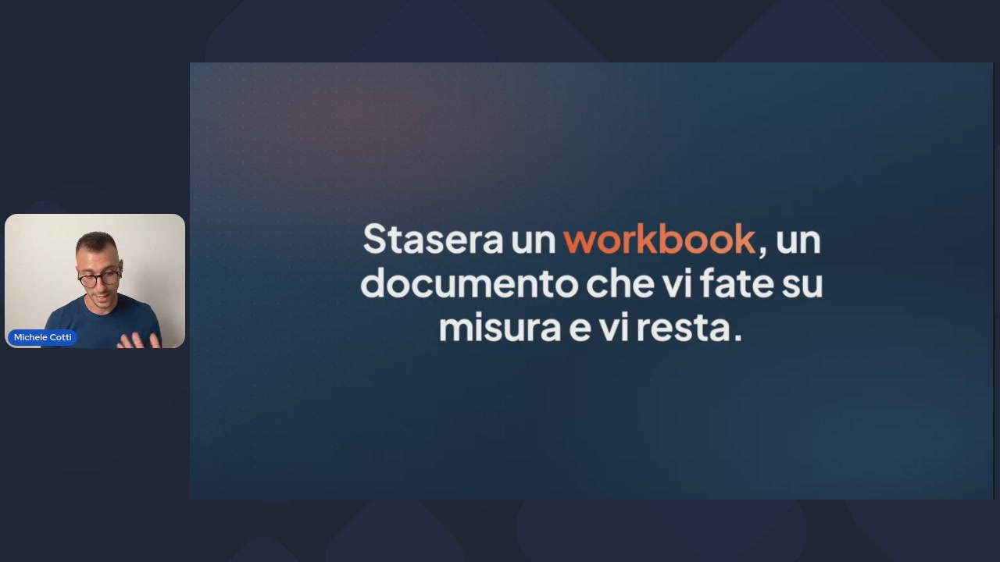
OCR: Stasera un workbook, un documento che vi fate su misura e vi resta.
Insieme al workbook stasera c'è anche un regalo che non avevo ne ancora annunciato da nessuna parte, si chiama l'impronta. Cosa farei preciso? Ve lo faccio vedere poi a fine serata, quando avrete capito effettivamente perché vi serve quella cosa. Ma ve li do solamente ad una condizione, come vi ripeto, che restiate fino alla fine. A chi molla la metà non li mando dopo per email, molto molto importante. Belli concentrati, rimaniamo. Non è per cattiveria, è che le cose che contano le diamo a chi c'è. Come abbiamo già detto abbiamo fatto una selezione, si sono iscritti in tanti, ma voglio solo persone che davvero gli interessa l'argomento e sono sul pezzo. Un'ultimissima cosa, ognuno di voi ha un tutor di riferimento, una persona con cui potete parlare in privato in questi giorni, potete parlarci di qualsiasi cosa. Un dubbio sull'azienda, una domanda su quello che vedete, usatelo, ok? È lì per voi. Tartassatevi questi tutor, ok? Sono lì apposta, se c'è qualcosa che non vi è chiaro, chiedete. Ogni domanda va bene,
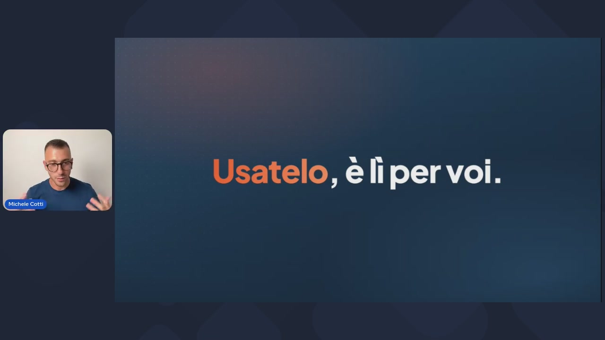
OCR: pr Usatelo, è li per voi.
non esistono domande stupide, ok? Quindi partiamo. Adesso vi faccio una domanda e voglio che ci pensiate un attimo davvero. Vi siete mai chiesti perché le aziende di intelligenza artificiale ad oggi valgono migliaia di miliardi di euro? Trilioni in alcuni casi. Non so se avete visto che si puoteranno anche OpenAI, Antropic per cifre spropositate, ok? E sono le aziende più ricche della storia dell'umanità. E poi voi aprite la stessa intelligenza artificiale, le chiedete di scrivervi un'email per un cliente e vi tira fuori una roba fredda, generica, che dovete riscrivere praticamente da capo. Com'è possibile questa cosa? La cosa più potente mai costruita dall'uomo e a voi in mano sembra un giocattolo che non azzecca nemmeno un email. Ecco, la risposta a questa domanda è la cosa più importante di tutta la serata e ve la voglio dare subito perché almeno voglio togliervi un peso dallo stomaco prima ancora di cominciare. Non è perché la usate male voi,
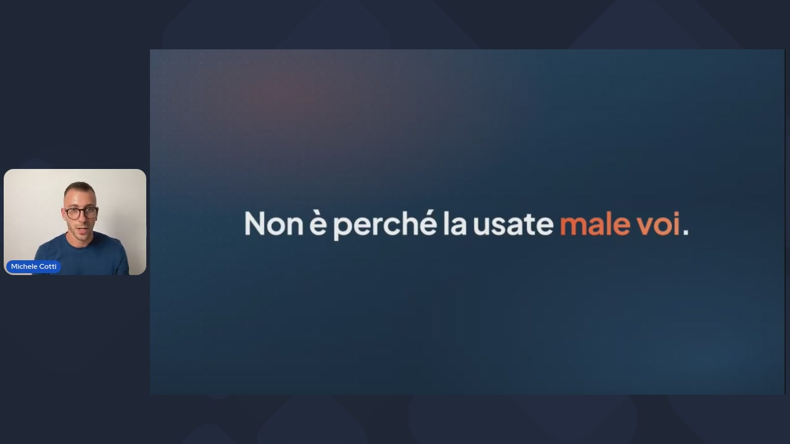
OCR: Non è perché la usate male voi.
ok? Sia chiaro. Non è che siete negati, non è che siete indietro, non è colpa vostra. È che ve l'hanno consegnata a metà. Ve l'hanno data senza la parte che la rende davvero vostra. Senza il pezzo che la fa funzionare per la vostra azienda. E in queste tre sere io vi faccio vedere esattamente qual è quel pezzo e come si costruisce ovviamente. Vi dico anche una cosa, anche cosa succede in queste tre sere, così sapete dove stiamo andando. Stasera capite una volta per tutte perché finora l'AI non vi ha neancora cambiato l'azienda e vi fate la diagnosi della vostra situazione. Nero su bianco sul vostro caso specifico. Domani sera vedete il sistema lavorare dal vivo davanti a voi e vi prendete la mappa esatta per costruire la cosa importante. E poi l'ultima sera colleghiamo tutto, ok? E vi mostro come si passa da un'azienda che gira solo se ci siete voi a un'azienda che invece ha un cervello suo che lavora anche quando voi non ci siete, che è questo l'obiettivo di
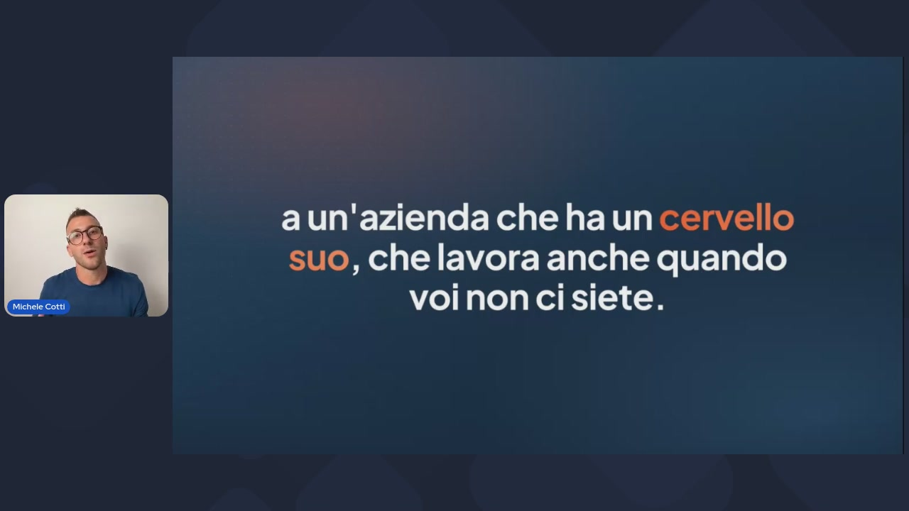
OCR: aun'azienda che ha un cervello suo, che lavora anche quando voi non ci siete.
perché siamo qua. Quindi io direi che si può partire, ok? Come vi ho detto prima, partiamo da voi. Vi avviso, mentre parlo, più di una di queste cose che vi dirò probabilmente ve le sentirete addosso, è normalissimo. Siamo tutti sulla stessa barca e adesso ve lo dimostro. Nei giorni scorsi ho fatto una cosa, ho preso tutte le vostre risposte al questionario, quelle che avete compilato quando vi siete iscritti, insomma, centinaia di risposte e le ho lette una per una. Dopo averle fatte analizzare nel mio company brain, le ho lette una per una perché volevo davvero capire cosa vi pesa davvero, ok? Senza tirare ad indovinare. E sapete qual è la cosa che mi ruba più tempo? Quella che è tornata più di ogni altra cosa? Il lavoro ripetitivo, ok? Il lavoro ripetitivo. E le stesse identiche cose, ogni giorno, ogni settimana, fatte a mano da voi. Uno su quattro di voi ha scritto proprio questo con parole diverse. E uno su quattro è tanto, ragazzi.
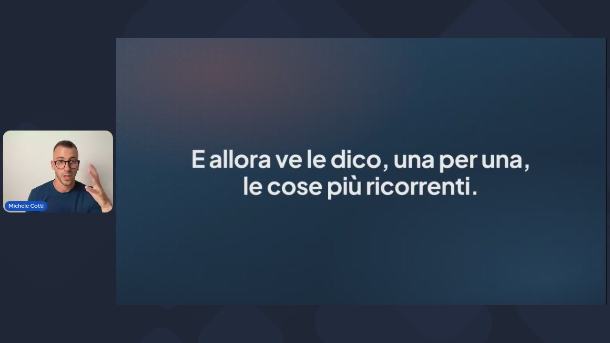
OCR: E allora ve le dico, una per una, le cose più ricorrenti.
E allora ve le dico, una per una, le cose più ricorrenti. E scommetto che mentre io le elenco, riconoscerete anche la vostra. Prima cosa, le email. Leggere, smistarle, rispondere ai clienti che vi fanno sempre le stesse tre domande, aprite la casella la mattina e sono già a 40, la chiudete la sera e probabilmente sono ancora a 40. Oppure i preventivi e le offerte. Quanti di voi hanno scritto preventivi e offerte? Ogni volta da rifare da zero, ogni volta a ripensare al prezzo, a scrivere le stesse condizioni, a rincorrere il cliente che poi magari non vi risponde nemmeno. Oppure cercare un documento. Questa la conoscete bene perché tanti di voi hanno scritto proprio questo. Quanti documenti abbiamo sparsi? Cercare un documento. Dov'è finito il contratto di quel determinato cliente? Era nell'email? No. Era magari sul drive? No. Ce l'ha il commercialista? No. Forse nella vecchia cartella? Chi lo sa quante volte è capitata questa cosa? Intanto sono passati magari 20 minuti per una cosa che dovrebbe richiederne 20 secondi, non 20 minuti. Perché quello che la vostra azienda sa è sparso in
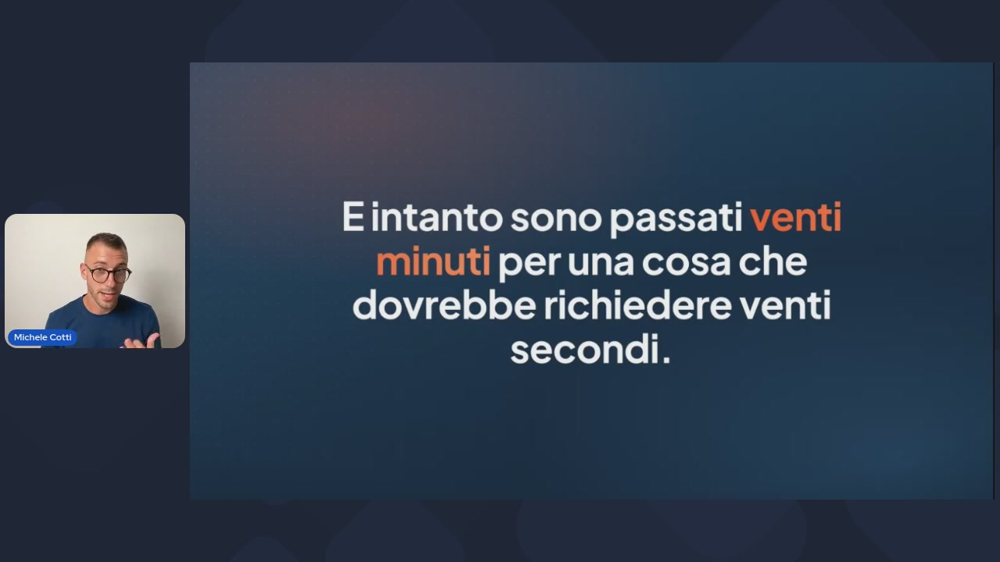
OCR: E intanto sono passati venti minuti per una cosa che dovrebbe richiedere venti tn secondi.
cinque posti diversi, più la Oggi parliamo di business online, prodotti digitali e mindsetti digitali. Oggi parliamo di business online, prodotti digitali e mindsetti digitali.
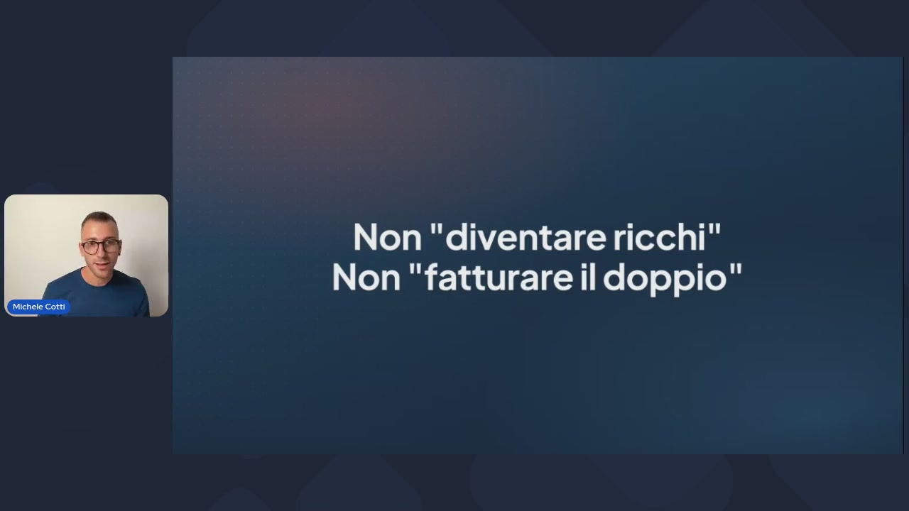
OCR: e Non "diventare ricchi" Non "fatturare il doppio"
Oggi parliamo di business online, prodotti digitali e mindsetti digitali. Un collaboratore che vi chiede una cosa che vi avete già spiegato la settimana scorsa. Riattaccate, avete perso il filo della mail e quindi ricominciate. Poi vi ricordate del preventivo che avevate promesso alla persona che vi ha scritto che era per ieri. Bene, lo cercate, non trovate l'istituto aggiornato, chiamate l'amministrazione, guardate l'orologio ed è praticamente mezzogiorno e non avete neancora fatto una delle cose importanti che vi eravate segnati stamattina.
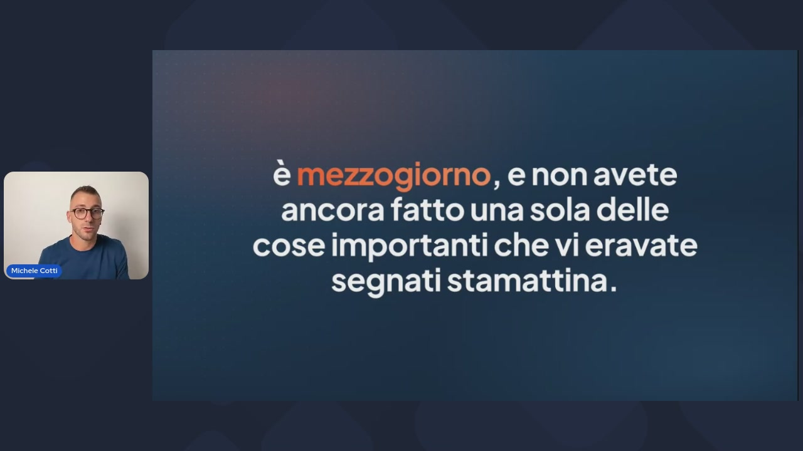
OCR: è mezzogiorno, e non avete ancora fatto una sola delle cose importanti che vi eravate segnati stamattina.
E questo era solo lunedì, poi c'è il martedì, poi c'è il mercoledì e il sabato, quando poi tutti gli altri staccano, voi siete lì a recuperare quelle che non siete riusciti a fare in settimana. Adesso vi faccio la domanda scomoda della serata. Pensatela bene, con onestà, come se non vi vedesse nessuno, ok? Se domani mattina spariste per una settimana, telefono spento proprio, niente mail, ok? Niente di tutto. La vostra azienda andrebbe avanti da sola? Sì oppure no? Oppure si inceppa? Si blocca? Perché metà delle cose che servono per farla girare vivono solo dentro la vostra testa? Siate sinceri, siate sinceri con questo. Pensateci un attimo e rispondetevi dentro di voi. Se la risposta è si ferma, sappiate che non siate soli. Era così anche per me e sono sicuro che la situazione di molti di voi qui stasera è proprio questa. La vostra azienda gira e gira magari anche molto bene, fate anche un sacco di soldi magari.
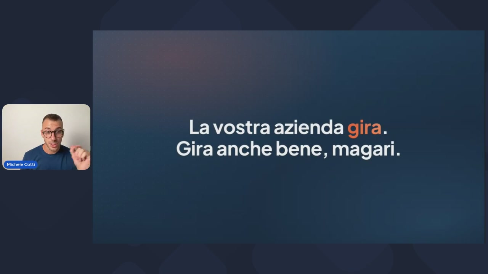
OCR: La vostra azienda gira. Gira anche bene, magari.
Ma gira perché ci siete voi, ok? Gira perché ci siete voi. E questa non è una cosa che potete tenere in piedi per sempre. Perché fermatevi un secondo e pensateci davvero, ognuno per sé. Qual è la cosa, una sola, che ruba più tempo a voi? Qual è quella singola cosa che vi ruba più tempo in assoluto? Pensateci bene. E se avete già provato a risolverla con le AI, con magari c'è GPT, con un'automazione, ripensate anche a dove vi siete arenati, dove vi siete incastrati su questa cosa. E tenetevelo bene in mente perché tra pochissimo vi spiego esattamente perché finora non ci siete ancora riusciti. È sempre la stessa storia, vero? Le stesse cose, gli stessi blocchi, per un'agenzia come magari per uno studio, come per una cosa di produzione, ok? E io questa storia la conosco bene, praticamente la conosco a memoria. Perché l'ho vissuta pure io sulla mia pelle per otto anni, ok? E adesso, giusto un secondo, lasciate che vi rubi giusto cinque minuti per raccontarvi un attimo chi sono,
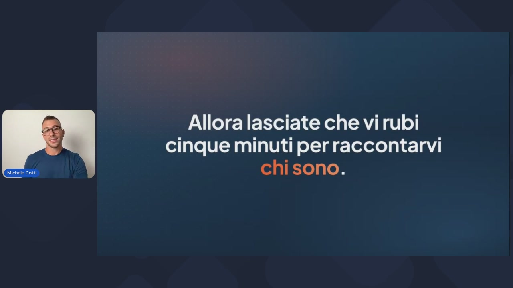
OCR: Allora lasciate che vi rubi cinque minuti per raccontarvi chi sono.
dato che magari tanti di voi non mi conoscono. Ma non voglio farvi la lista delle cose che ho fatto, non voglio farvi il curriculum, ok? Vi racconto una sola cosa. L'errore che ho ripetuto in ogni singola azienda che io ho costruito negli ultimi anni. Perché il sistema che vi faccio vedere in queste sere non nasce da una teoria, ok? Non è che l'ho letto in un libro o l'ho visto su un video di YouTube, ok? Nasce da lì, da quell'errore. Io vengo da un paesino della Vallecamonica, in provincia di Brescia. Magari tanti di voi sono anche della zona, non lo so. E a vent'anni io lavoravo come Fabbro con mio padre in officina. Andavamo a montare cancelli, il Fabbro, insomma. Nel frattempo, la sera, io studiavo Ingegneria Informatica a Brescia. Perché? Perché la tecnologia a me è sempre piaciuta, ok? Da quando ero ragazzino, prima ancora di sapere effettivamente cosa farci, mi piaceva la tecnologia. Poi ad un certo punto, però, ho scoperto che con l'online si poteva costruire un'azienda vera,
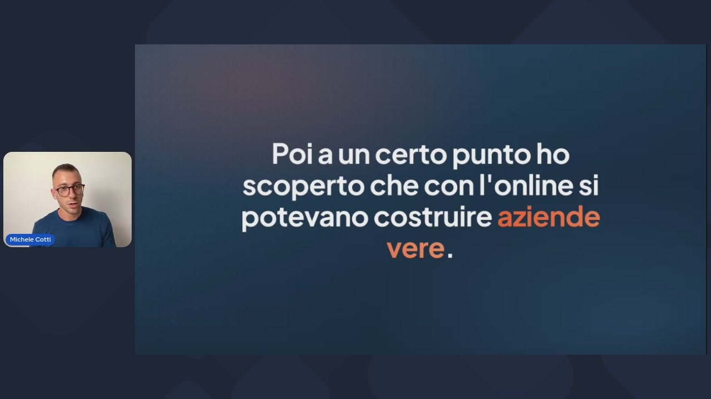
OCR: Poi a uncerto punto ho scoperto che conl'online si potevano costruire aziende vere.
fare qualcosa, poter far soldi, viaggiare e costruire davvero aziende. Allora lì ho mollato completamente l'università al secondo anno, non l'ho finita. E mi ci sono buttato sull'online con tutto me stesso e non sono praticamente più tornato indietro. Ma, attenzione, voglio dirvi una cosa perché, e questo voglio che ve lo segnate, io non ho mai fatto il programmatore in vita mia, ok? Mai scritto una riga di codice per lavoro. Questo ve lo dico perché so già cosa scatta nella testa di tante quando sentono «eh, questo ha fatto Ingegneria Informatica, allora è facile per lui, è un tecnico». No, ok? Niente di tutto ciò. Non ho sempre stato appassionato di tecnologia, non ho mai scritto però una linea di codice con le mie mani, ok? Quello che vi faccio vedere in questa sera non lo tiene in piedi un programmatore, lo tiene in piedi uno che ha imparato a spiegare bene la propria azienda. Ora, il codice, quando serve, come vi ripeto, lo scrive l'AI da sola. Io le dico solo cosa voglio, ok? È l'AI che lo scrive per me. Vi faccio però l'elenco veloce e poi vi spiego perché ve lo dico.
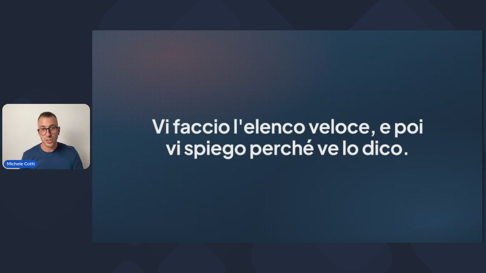
OCR: Vi faccio l'elenco veloce, e poi vispiego perché ve lo dico.
In questi anni io ho costruito un e-commerce, l'ho fatto crescere e poi l'ho venduto. Ho tirato su anche un'azienda di formazione, 863 clienti seguiti in 5 anni. Un team di circa 10 persone, processi, l'assistenza, tutto. Tante di queste persone sono anche all'interno di quello del workshop di stasera o ho letto tanti nomi a me familiari. E poi, nel frattempo, con un altro socio, ho anche tirato su un altro e-commerce di prodotti digitali che in un solo anno ha fatto circa 700.000 Euro. Erano 715.000 Dollari di fatturato a mercato americano. Vi faccio vedere questi numeri, non perché non è che voglio vantarmi, non me ne frega niente di impressionarvi, anche perché probabilmente molti di voi faranno numeri molto più alti di quelli che ho fatto io, a livello di impresa proprio. Ve li faccio vedere perché il punto vero è proprio quello che in questi screenshot non si vede. Perché se io guardo indietro a tutte queste aziende, che in sé a prima vista sembrano cose diverse,
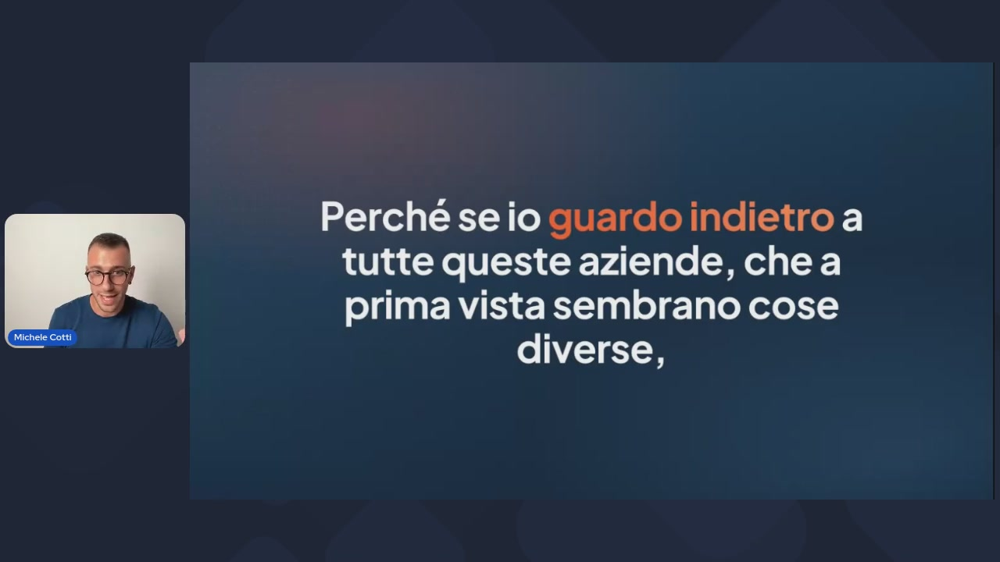
OCR: Perché se io guardo indietro a tutte queste aziende, che a prima vista sembrano cose diverse,
un e-commerce, la formazione, i prodotti digitali, mi accorgo di una cosa, che io ho sempre fatto lo stesso identico lavoro. Cambiava il prodotto, ma il mestiere non cambiava. Il mio mestiere non è mai stato vendere magliette o vendere corsi o il prodotto digitale. No, il mio mestiere è sempre stato uno solo, costruire la macchina. I processi, i sistemi, le automazioni, tutta la roba che fa girare un'azienda, anche quando tu non ci sei fisicamente, sapete meglio di me, quella è sempre stata la parte che mi accendeva, quella che mi faceva alzare la mattina a carico di fare quello che stavo facendo. E in tutte quelle aziende, tutte, io ho fatto lo stesso identico errore. La macchina la costruivo, sì, ma la costruivo intorno a me. Quindi tutto quello che sapevamo, come si fa un preventivo giusto, come si risponde a un cliente incazzato senza perderlo, perché quella campagna l'anno scorso è andata male mentre quell'altra invece è andata bene, stava tutto qua, nella mia testa.
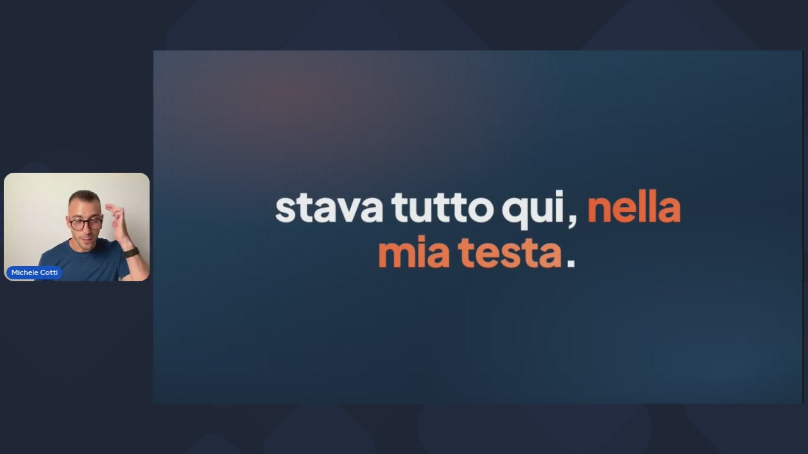
OCR: stava tutto qui, nella mia testa.
Non era scritto da nessuna parte, era tutto dentro di me. Tutto dentro di me, tutte le sante volte. E sapete qual era il risultato? Che guadagnavo più che mai, andava bene, l'azienda andava, guadagnavo, ma io non potevo staccare tre giorni di fila, mai. Ogni decisione, anche la più piccola, passava da me. E sono sicuro che tanti di voi probabilmente sono nella stessa situazione. Ogni volta che entrava una persona nuova del team, ricominciavo da zero a spiegarle tutto, le stesse cose, per l'ennesima volta. E c'è un momento che non dimenticherò mai, quando ho venduto l'e-commerce, quello che avevo tirato su in anni di lavoro, alla fine non mi è rimasto praticamente niente. Cioè, i soldi sì, quelli della vendita, ovvio, se fai una exit, però nient'altro, ok? Mal sistema. Tutto quello che avevo imparato, tutto il know-how di due anni, zero, ok? Sparito. Perché non esisteva, perché non esisteva fuori dalla mia testa, ok? Era solamente qui. E non potevo lasciarlo a nessuno, non potevo trasferirlo, perché non era mai stato scritto. Il cervello dell'azienda ero completamente e solo io.
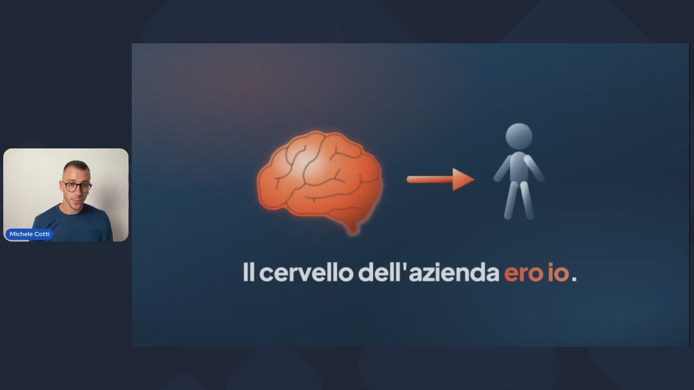
OCR: ali ® 7 Il cervello dell'azienda ero io.
E un cervello solo, credetemi che non basta, ok? Non si moltiplica, non lo puoi dare ad un altro, e non va mai in ferie, ok? Poi, invece, arriva l'intelligenza artificiale. E io, come immaginato, ci salto dentro subito, perché mi piace la tecnologia, ok? Mi piace. E inizio ad utilizzarlo ogni giorno. Ormai lo uso da prima che c'è GPT diventasse così conosciuto, ok? Vedete che c'è GPT e già qualche anno che c'è, io lo utilizzavo già prima all'interno delle aziende. E non per farci video su internet, ok? Ma per far girare le mie aziende via. E lì, indovinate un po', ho rifatto praticamente lo stesso identico errore. Come probabilmente lo state facendo anche voi, ok? Come lo fanno tutti. Un prompt di qua, un tool di là, un'automazione, un pezzo attaccato dall'altro con lo scotch. Niente di concreto, ok? Funzionava una volta, ci prendevo gusto, e la volta dopo si rompeva. E soprattutto, ogni volta che aprivo una chat nuova, dovevo ricominciare da capo a spiegare chi ero,
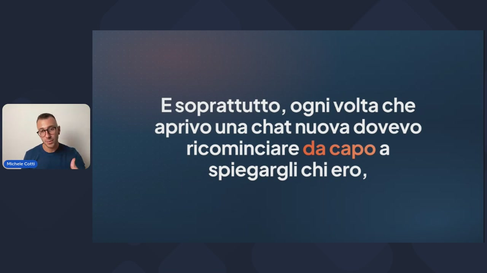
OCR: E soprattutto, ogni volta che aprivo una chat nuova dovevo ricominciare da capo a spiegargli chi ero,
cosa vendevo, come lavoravo, chi erano i miei clienti, e tutta sta roba. Ok? Ogni singola volta. Ho buttato via mesi così, ok? E mi ricordo ancora una notte, saranno state le 11 passate, e ero lì che rifacevo per la terza volta la stessa identica automazione che si era rotta di nuovo. Ad un certo punto mi sono fermato, ho guardato lo schermo e mi sono detto ma io sto lavorando per le AI, non è le AI che lavora per me. Quanti di voi hanno pensato questa cosa qua? Perché credetemi io, io l'ho pensato, ad un certo punto ho detto cazzo ma io sto, sono qua davvero che sto io lavorando per le AI, non è le AI che lavora per me. E lì ho preso il problema al contrario. Quindi finché ho capito la cosa che mi ha ribaltato tutto ed è esattamente la cosa che sto per dire a voi. Il problema non era il tool, non era mai stato il tool, lo strumento, chiamatelo come volete, il problema era che il cervello della mia azienda non esisteva da nessuna parte fuori che dalla mia testa. E allora come potevo darlo all'intelligenza artificiale
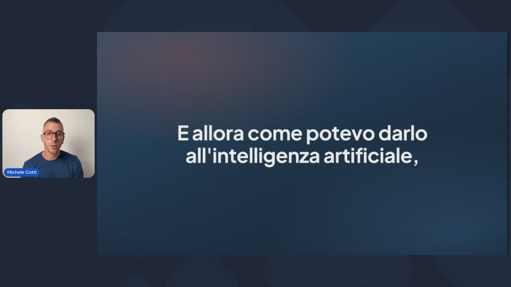
OCR: E allora come potevo darlo all'intelligenza artificiale,
se non ero nemmeno mai riuscito neanche a darlo ad un dipendente in carne ed ossa? Il cervello dell'azienda ero io. Di nuovo. Lo stesso identico errore per la terza volta dopo otto anni, ok? Solo che stavolta finalmente l'avevo visto. E allora ho smesso di rincorrere il tool e ho costruito il cervello. Prima quello. E lì, credetemi, è cambiato davvero tutto. Dentro le mie aziende, perché non te lo dico a parlare, è cambiato davvero tutto all'interno. Vi dico solo dove sono arrivato oggi e poi torniamo di nuovo a voi. In pochissimo tempo è tutto su una cosa sola. Quindi l'azienda con cui costruisco esattamente quello che vi faccio vedere in queste serate. E intorno a questo modo di lavorare in pochissimo tempo sono anche nati una community di quasi 2.900 Imprenditori. Ormai siamo quasi a 3.000. E un canale con quasi 10.000 Iscritti su YouTube. Magari tanti di voi mi seguono. Non è da tanto che mi sono messo a fare i video. Le iai lo usiamo da tanto. Volevo anche darvi un po' di contesto di me. Perché in giro si vedono tanta gente
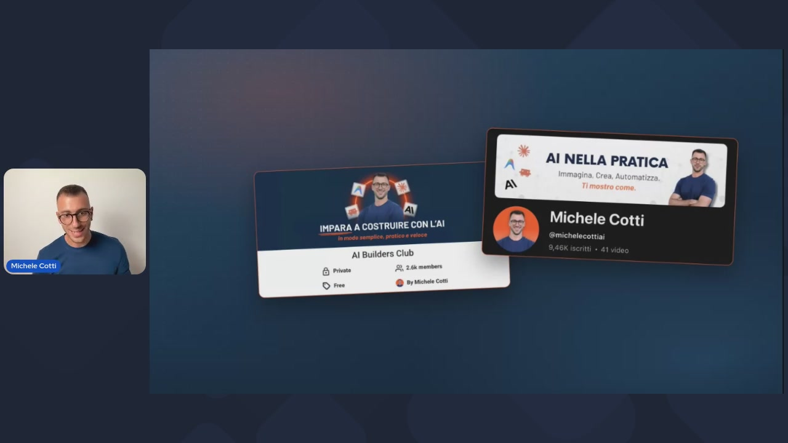
OCR: AI NELLA PRATICA A Michele Cotti @michelecottiai IMPARA A COSTRUIRE CON L'AI
No, io sono un imprenditore. Ho sempre applicato le iai in azienda. E da poco mi sono messo online a disporlo. A far vedere quello che effettivamente faccio. I canali sono cresciuti molto in fretta. Adesso vedete il canale è un pochettino di più. Gli iscritti sono dell'altro giorno. La community siamo a 2.900. Questi sono un po' di feedback di persone che hanno scritto in community un po' di feedback positivi, insomma.
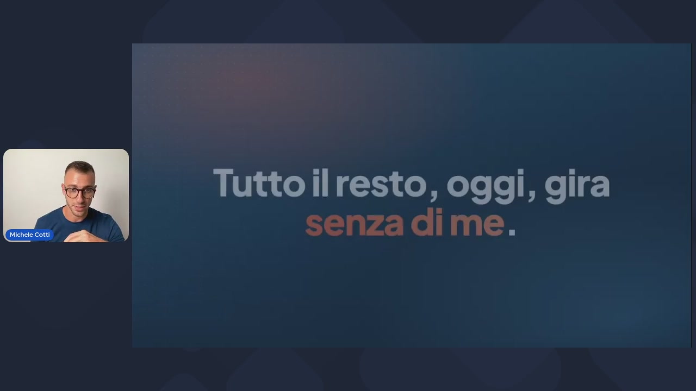
OCR: pr Tutto il resto, oggi, gira E senza di me.
Tutto il resto oggi gira senza di me. Quell'e-commerce di prodotti digitali da 700.000 Euro non è nemmeno più un e-commerce. L'abbiamo fatto diventare un software di intelligenza artificiale per i terapisti negli Stati Uniti. E quello va avanti con i suoi clienti. Che è un software, e-iai, per terapisti, psicologi, eccetera in US. E l'azienda di formazione, invece, è quella da 863 clienti. Quella che l'anno scorso ha fatto 428.000 Euro cash non l'ho chiusa e non l'ho venduta. Va avanti con qualche mia ora al mese. Tutto il lavoro che prima passava dalle mie mani, dall'assistenza, i contenuti, la gestione dei clienti, le operazioni e quant'altro, oggi lo fa il sistema che vi sto raccontando. Ed è per questo che sono qui stasera. Non perché l'e-iai va di moda e ci si fanno i soldi, perché per la prima volta in 8 anni le mie aziende non dipendono più da me. Non dipendono più completamente da me. E quel giorno lì, il giorno in cui ho smesso di essere il cervello delle mie aziende, è stato il giorno più importante della mia vita
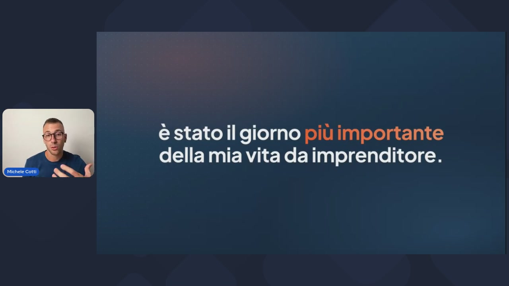
OCR: i è stato il giorno più importante », della mia vita da imprenditore. Ss
come imprenditore. E se stasera siete qui, seduti davanti a questo schermo, quel problema ce l'avete anche voi probabilmente. E, come ripeto, lo so perché ci sono passato. E allora adesso vi dico la cosa per cui vale davvero la pena essere qui stasera. Quella da segnarsi, ok? Se stasera vi portate a casa una frase sola, è questa. Non vi manca l'automazione giusta, non vi manca il modello di e-iai più potente, non vi manca il prompt segreto, ok? Mi fanno ridere, ragazzi, quanti in giro online su e-za mi dicono, eh, vi do il prompt segreto magico per fare... Ragazzi, capiamoci, ok? Sta roba è da chi fa i videini e basta, ok? Non vi manca nemmeno il corso da comprare, vi manca il cervello, ok? Ve lo spiego nel modo più semplice che c'è, così è chiaro per tutti. Quando voi aprite GPT o qualsiasi altri e-iai e le chiedete
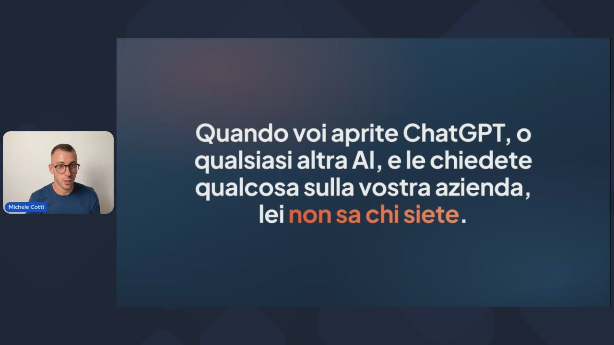
OCR: Quando voi aprite ChatGPT, o qualsiasi altra AI, e le chiedete qualcosa sulla vostra azienda, leinonsa chisiete.
qualcosa sulla vostra azienda, lei non sa chi siete, ok? Lei non sa chi siete. Punto. Non sa cosa attendete, non conosce i vostri clienti, non sa come parlate, non ha la più pallida idea di come fare un preventivo o che margini avete, ok? Non lo sa, come fa a saperlo? E allora, cos'è che fa? Tira di indovinare, ok? È un modello probabilistico. Vi dà la risposta più media, più generica possibile, più vicino a quello che potrebbe andarvi bene. Quella che andrebbe bene però per chiunque e quindi non va bene per nessuno. E voi cosa fate? La correggete a mano, la riscrivete, ogni volta da capo. È come avere un consulente bravissimo, il più bello del mondo. Del mondo, probabilmente, che però ogni mattina si sveglia e ha dimenticato tutto di voi. Tutte le mattine dovete ripresentarvi, rispiegarvi l'azienda, ricontestualizzare tutto. Un genio, ma senza memoria. E ve lo faccio vedere in concreto, così è chiaro. Mi chiedete di
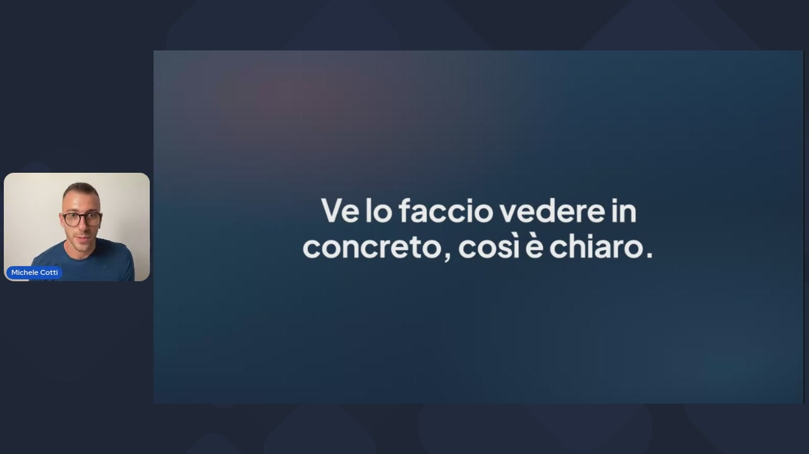
OCR: Ve lo faccio vedere in concreto, cosi è chiaro.
scrivere magari la risposta a un cliente che si lamenta per un ritardo. E lui vi tira fuori una roba del tipo, gentile cliente, ci scusiamo per il disagio arrecato, la sua richiesta è per noi molto importante. Prova che sono sicuro probabilmente non direste mai che non è vostra quella cosa qua, che sa proprio di vero il proprio consenso. Ditemi se è così o meno. Quante volte vi capita una roba del genere? Adesso voglio fermarmi giusto un secondo. Apriamo giusto due secondini la chat e voglio effettivamente capire quanti di voi lo usano in questo modo e gli da risposte di questo genere. Così, generica. Datemi un feedback. Abbiamo riaperto la chat, dopo si riparte. Tutti i giorni, ottimo. Lo so, ragazzi. Sempre. Mai ma gioca in casa, vabbè, di bene. Ok, sempre, a volte sì, sempre. Sono
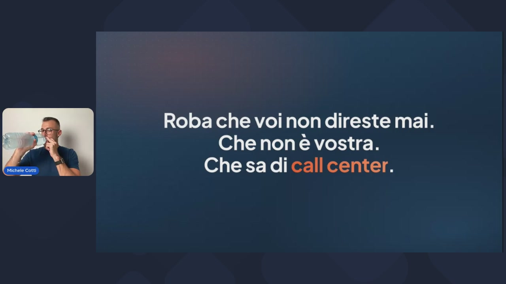
OCR: Roba che voi non direste mai. Che non è vostra. Che sa di call center.
sicuro, lo sapevo. Perché? Ma perché la maggior parte delle persone usa così, è la cosa più importante al mondo, più potente al mondo, ma è un genio senza memoria. Ok? Il contesto è tutto, sono d'accordo, ci arriviamo. Perfetto. Tantissimi di voi, ok? Praticamente la maggior parte state scrivendo sempre, può capitare, spesso, spesso, ok. Ottimo. Torniamo alla nostra presentazione, richiudiamo la chat che via, ok? Ok. Quindi, roba che non direste mai, che non è vostra, che sa praticamente di call center. E allora io lo so che la fate, la cancellate, la riscrivete a mano, con il vostro tono, con i vostri modi, magari ricordandovi che quel cliente lì lo conoscete da anni e ci scherzate pure, ok? Perché? Perché lui non lo può sapere. Alla fine ci avete messo più tempo che a scrivervelo a voi da zero, senza utilizzare le AI. E ecco cos'è un genio
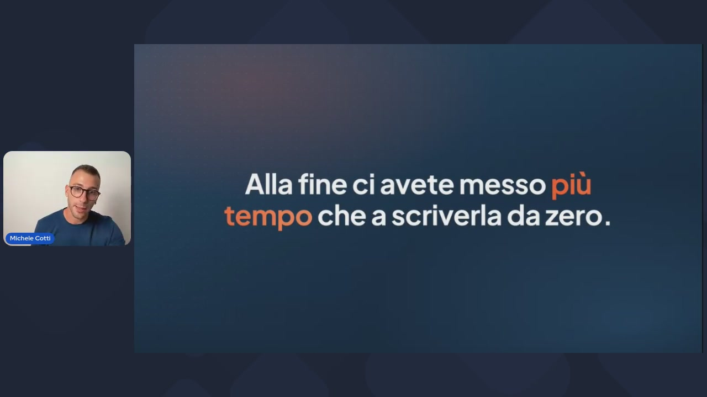
OCR: Alla fine ci avete messo più tempo che a scriverla da zero.
senza memoria. La cosa più potente del mondo, ma per la vostra azienda, è come se fosse il suo primo giorno di lavoro. Ogni singolo giorno. L'avete scritto voi stessi? Ogni singolo giorno. Ed è per questo, e adesso lo capite, che tutto quello che vi montate sopra, le automazioni, i tool, qualsiasi cosa, invecchia in fretta. E ve lo ritrovate scollegato un pezzo qua e un pezzo di là, che dovete tenere insieme voi a mano, altrimenti si rompe, ok? State versando acqua sempre più in fretta dentro un secchio bucato. Più correte, più si svuota. Semplice. E allora la domanda è, di chi è la colpa? Ve l'ho detto all'inizio e ve lo ripeto adesso, guardandovi dritto negli occhi. Non è colpa vostra, ok? Non è colpa vostra. Vi hanno messo in mano, ve l'hanno messo in mano così, questa AI, ok? Vi hanno dato il motore più potente mai costruito e insieme una casella di testo vuoto. Nient'altro. È questo. Nessun libretto di istruzioni, nessuno che vi dicesse come si fa
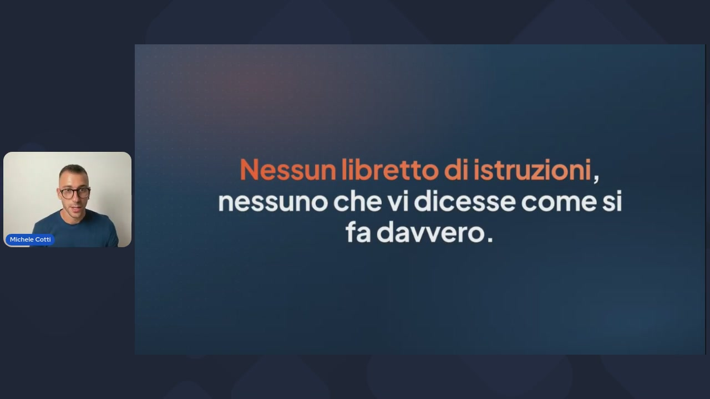
OCR: Nessunlibretto di istruzioni, nessuno che vi dicesse come si fa davvero.
davvero. Vi hanno fatto credere che usare l'AI fosse aprire quella chat e scriverci dentro qualcosa. Quanti di voi la usano così? Tantissimi. Tantissimi. E quando non ha funzionato, vi siete sentiti negati voi. Ma quella chat, finché non ha un posto dove vive la vostra azienda, resterà per sempre un genio con l'amnesia. E non importa quanto siete bravi voi, non siete voi che la usate male, ok? Deve esservi chiaro questa cosa. Ve l'hanno data senza la parte che la rende vostra. E se in questo momento, dentro di voi, state pensando, cazzo, è vero, è esattamente quello che mi succede, allora vuol dire che finora nessuno ve l'aveva mai detta, magari alcuni di voi sì, magari tanti di voi sì, ma a tanti di voi sono sicuro che nessuno ve l'aveva mai detta. E vuol dire che siamo sulla strada giusta, ok? Adesso due cose veloci prima di andare avanti, perché sono importanti e riguardano il tempo. Il vostro tempo e i vostri soldi. 1. Nell'ultimo anno le aziende italiane che usano l'AI sono raddoppiate, ok? Raddoppiate
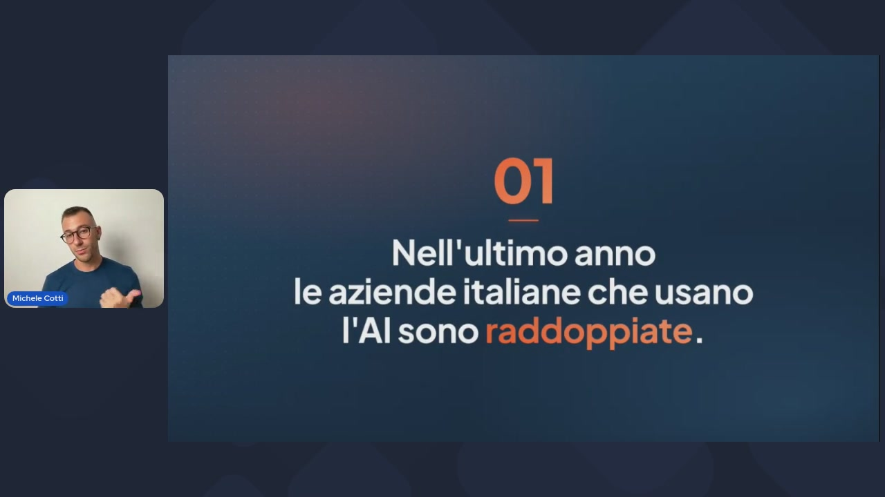
OCR: 01 p" Nell'ultimo anno è le aziende italiane che usano l'Alsono raddoppiate.
in 12 mesi, non è un numero da poco. Sembra anche una buona notizia, no? Il problema è come la usano, quasi tutta la usano come un Google un pochettino più sveglio. Fanno una domanda, ottengono una risposta e finisce lì. E la gente ci spende davvero ore qua sotto, che non servono a nulla. Grattano la superficie, ok? Stanno vedendo l'1% di quello che davvero può fare. Ma quei pochi che invece partono dal cervello, nell'ordine giusto, si stanno costruendo un vantaggio che ogni mese che passa diventa sempre più difficile da recuperare per gli altri. E i vostri concorrenti sono già là fuori, stasera. Alcuni di loro hanno già iniziato, potenzialmente il doppio di quanti non erano un anno fa. Abbiamo visto la raddoppiata in 12 mesi. E questa invece la toccate con mano, perché è la più concreta di tutte, la seconda. Quelle ore ripetitive di cui parlavamo prima, quelle che vi mangiano la settimana, un prezzo, ce l'hanno. Non sono gratis. E oggi voi le pagate
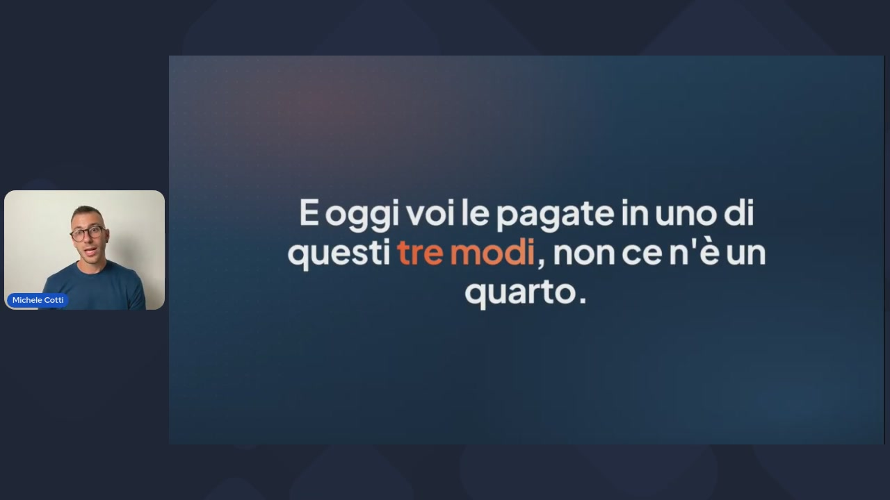
OCR: E oggi voi le pagate in uno di questi tre modi, non ce n'è un quarto.
in uno di questi tre modi, ok? Non c'è un quarto modo, le pagate in questi tre modi. O ve la fate voi di sera, nei weekend, quando gli altri staccano. E la paga, in questo caso, è la vostra vita, ok? Il vostro tempo. Il tempo che non passate con i figli, con vostra moglie, a riposare magari, a fare sport, a fare quello che vi piace. Oppure lo date ad un dipendente, che magari tra stipendi o contributi, tutto vi costa sui 30 mila euro all'anno, se siete in Italia. E deve pure essere bravo e restare, ok? Altrimenti tempo sprecato. Oppure, la terza opzione, non la date a nessuno. E quindi, perché quel dipendente giusto magari non lo trovate, o non ve lo potete permettere. E allora restano lì, quelle cose, ad accumularsi. Il cervello di cui vi sto parlando è la quarta via, quella che nessuno vi ha mai raccontato. E attenzione a come lo dico, perché è importante. Non sostituisce nessuno, ok? Non manda a casa i vostri collaboratori, a meno che voi non lo vogliate, chiaramente. Vi restituisce le ore, ve le ridà indietro, ok? Quindi tenetevi in testa
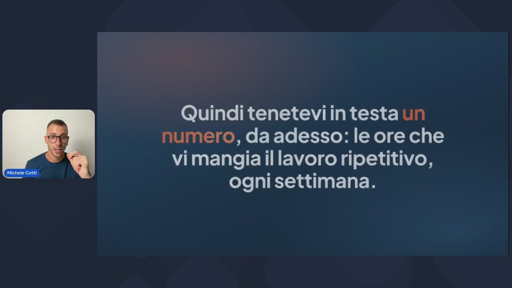
OCR: Quindi tenetevi in testa un numero, da adesso: le ore che vi mangia il lavoro ripetitivo, ogni settimana.
un numero, da adesso, le ore che vi mangia il lavoro ripetitivo ogni settimana, ok? Segnatevele mentalmente quante ore mangiate a settimana. Perché tra due sere, quel numero lo trasformiamo in un conto preciso, in euro, con i vostri numeri. E vi assicuro che quando lo vedete scritto, credetemi che cambia tutto e fa la differenza. E adesso facciamo la cosa più importante della serata per voi. Non per me, ok? Per voi. Perché di chiacchiere sulle IAI ne avete sentite probabilmente tante, ma io voglio che stasera usciate con una cosa chiara in testa, sulla vostra azienda, non in generale. Non dovete aprire niente, non cercate documenti, ok? Non vi disperdete. Vi faccio una domanda sola e voglio che ci rispondiate davvero, con onestà, dentro di voi. Se avete un foglio a portata di mano, scrivetela, che scritta pesa anche di più, ma una sola. Eccola. Qual è l'attività che vi ruba più tempo ogni singola settimana? Quella che, se domani mattina sparisse dalla vostra scrivania, vi cambierebbe le giornate? Non tre, non cinque. Una, ok? La più pesante in
OCR: Quella che, se domani mattina sparisse dalla vostra scrivania, vicambierebbe la giornata.
assoluto. Scrivetela. Probabilmente è già quella a cui avete pensato prima, quando vi facevo l'elenco. Probabilmente è una di quelle. Ce l'avete in testa? Pensateci, ok? Pensateci un attimo. Tenetevela stretta, perché quella lì è il vostro primo collo di bottiglia, è il punto esatto da cui, quando vorrete, si parte a costruire il cervello. Si comincia sempre da lì, non dalla cosa che vi pesa di più, ok? O meglio, dalla cosa che vi pesa di più. Si comincia sempre da quell'unica cosa, non da cinque, non da tre, è una, ok? È solamente una. Vi faccio qualche esempio, così vedete cosa cambia a seconda di, come cambia di base a seconda di chi siete. Se avete uno studio di commercialisti, di solito è rispondere alle stesse domande fiscali dieci volte al giorno. Se avete un e-commerce, è l'assistenza dei clienti, le stesse email all'infinito. Se siete nella produzione, sono i preventivi e le commesse
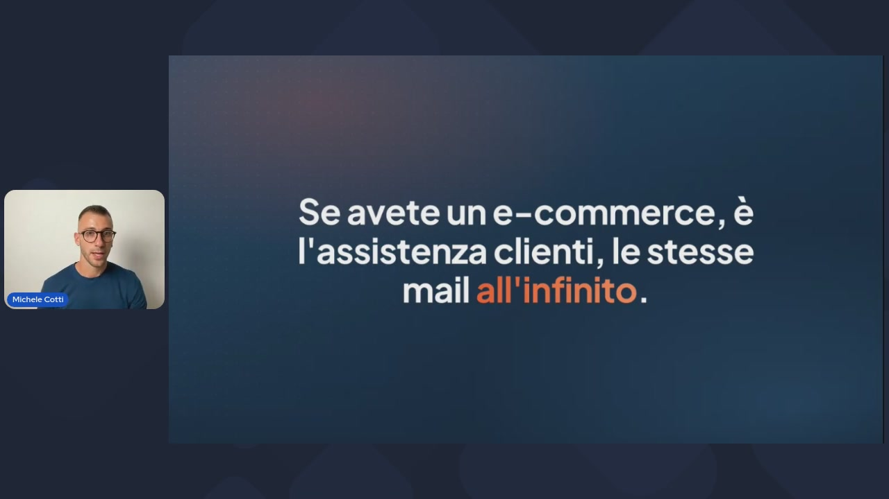
OCR: Se avete un e-commerce, è l'assistenza clienti, le stesse mail all'infinito.
da rifare ogni volta da capo. Vedete, di base, cambia il settore, cambia l'attività, ma il ragionamento è sempre lo stesso. C'è una cosa, una, che vi sta invororando le ore. Adesso, tenetela lì, ok? Scrivetevela sul foglio, tenetevela lì. Perché a fine serata vi consegno il workbook completo ed è quello il vostro regalo vero, ok? Lì dentro c'è la diagnosi per intero, tutte le domande giuste per fotografare la vostra situazione attuale. Ed è importante, perché senza di questa non si va a nessuna parte. Ma quello lo fate con calma, ok? Da soli, quando la diretta è finita, nessuno vi distrae e non perdiamo tempo, ok? Lo fate con calma. Stasera mi basta che abbiate messo il dito su quella prima cosa, che ci abbiate pensato e l'abbiate scritta. Adesso, che avete la vostra diagnosi in mano, che sapete qual è il vostro collo di bottiglia, diamo finalmente un nome alla cosa che lo scioglie, ok? Il fulcro di tutto. A quel pezzo che vi manca, quello che rende le IAI davvero vostra. Si chiama company brain, ok?
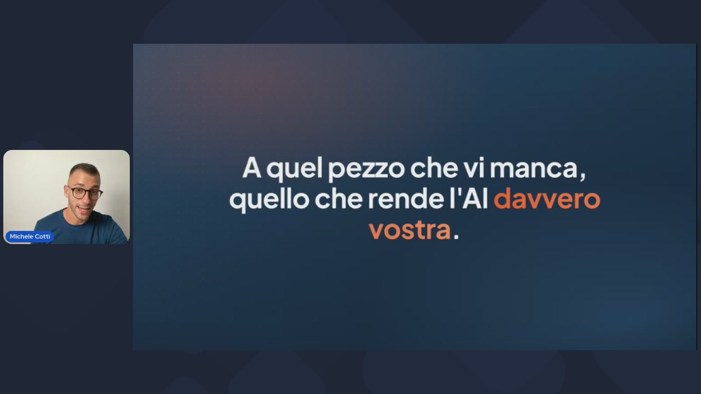
OCR: A quel pezzo che vi manca, quello che rende l'Al davvero vostra.
Company brain. E' una cosa di questo tipo, qui poi ci andremo a collegare tutto e poi ve lo faccio vedere. Il cervello dell'azienda. E voglio essere chiaro su cos'è, perché è facile fraintendere e voglio togliervi subito l'idea sbagliata. Non è semplicemente una cartella dove buttate dentro tutti i file sperando che le IAI in qualche modo si capisca, ok? Un mucchio documenti in una cartella non è un cervello. Esattamente come un mucchio di libri buttati per terra non è una biblioteca, ok? Stiamo parlando di due cose diverse. E non è nemmeno un'app in più da scaricare o l'ennesimo abbonamento da aggiungere alla lista di quelli che già state pagando e magari non aprite nemmeno. È un posto solo, uno, dove vive tutto quello che la vostra azienda sa. Chi siete, cosa vendete, i vostri clienti con la loro storia, i vostri processi, le vostre offerte, perfino il modo in cui parlate ai clienti, ok? Il vostro tono di voce. Tutto scritto, tutto in ordine, tutto collegato tra loro. Non sparsi in sei posti diversi come
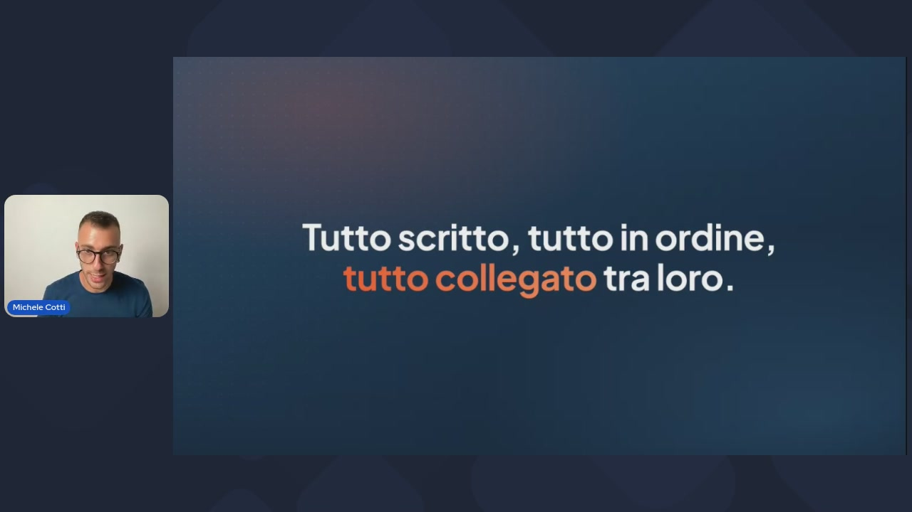
OCR: È Tutto scritto, tutto in ordine, tutto collegato tra loro.
adesso, ok? In uno. E quando le IAI ha questo posto sotto, cambia natura, credetemi. Cambia completamente natura. Smette di essere lo sconosciuto che vi incontra ogni mattina per la prima volta e diventa un socio che lavora con voi da anni, che vi conosce, che sa come rispondereste a voi, ok? Vi faccio un esempio semplice. Se chiedete ad un dipendente appena assunto di preparare un'offerta per un cliente, sono sicuro che ve la fa a casa. Generica, perché non sa niente della vostra azienda. Non sa niente della vostra azienda. Se la stessa offerta la chiedete invece ad un socio che lavora con voi da dieci anni, ve la fa quasi come se la fareste voi, o sbaglio, ok? Conosce i clienti, sa dove potete scendere sul prezzo e dove no, ci mette il vostro tono, ok? Vi conosce davvero bene, lavora con voi da tanto tempo. Ecco, il company brain fa esattamente questo. Quindi prende le IAI, che oggi per voi è il dipendente appena assunto, e lo fa diventare il socio da dieci anni, ok? Stesso strumento,
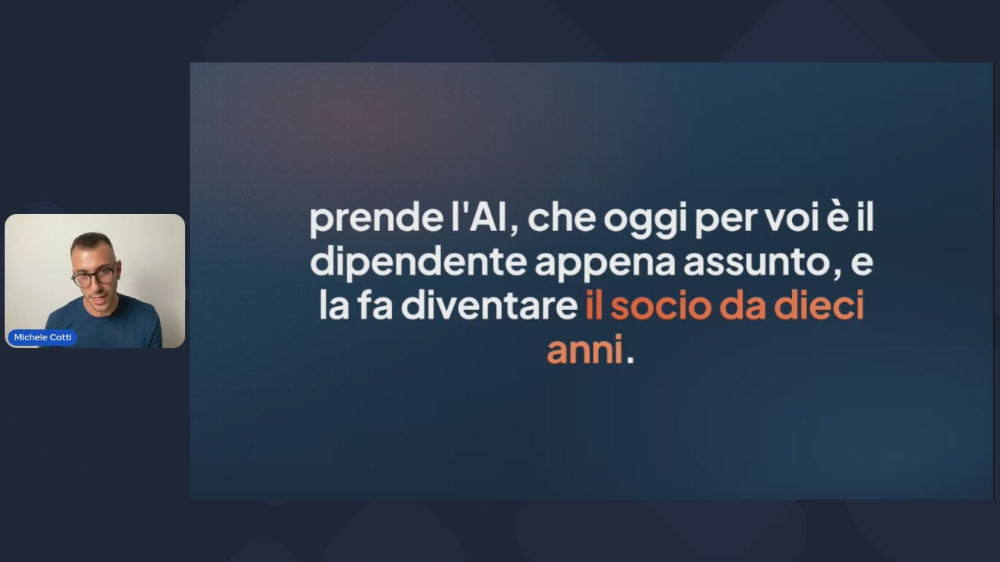
OCR: prende l'Al, che oggi per voi è il dipendente appena assunto, e la fa diventare il socio da dieci anni.
ma uno sa tutto della vostra azienda, l'altro invece no. E il metodo per costruirlo ha una regola d'oro, una sola, e voglio che ve la ricordiate. Prima il cervello, poi le automazioni, ok? In quest'ordine, mai al contrario. È una cosa fondamentale. Io lo chiamo Brain First, ok? Prima il cervello, il metodo Brain First, perché è lì che sbaglia il 90% delle persone. Partono dall'automazione, dal pezzo che lucica e saltano le fondamenta. Sono sicuro che il 90% di voi sta costruendo automazioni su automazioni senza avere una base su cui costruire automazioni, senza avere un brain dove costruire automazioni. E si costruisce il secchio buccato, ok? Ora ve lo faccio vedere nel concreto. Come si costruisce invece gli strati, ok? L'ordine esatto. Ve lo faccio vedere tutto domani sera, pezzo per pezzo, ok? Stasera vi basta che vi portiate a casa due cose. Il concetto e la diagnosi che avete appena fatto. Non lasciamo il Company Brain a un concetto
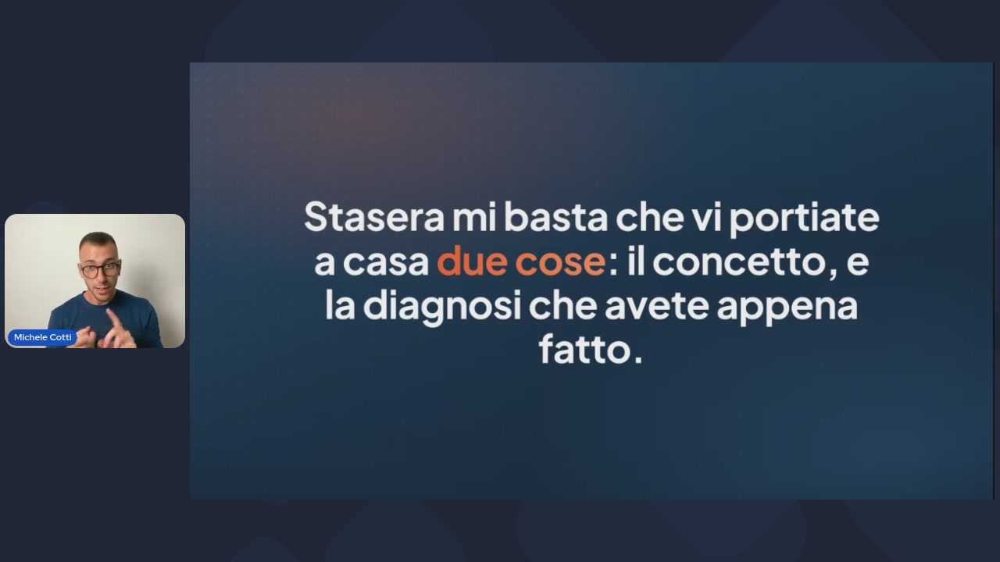
OCR: Stasera mi basta che vi portiate a acasa due cose: ilconcetto, e ® la diagnosi che avete appena fatto.
astratto, che tanto le parole poi, si sa, se le porta via il vento, ok? Ve lo faccio vedere così ci mettiamo, ci mettete gli occhi sopra. Ora andiamo e vi faccio vedere effettivamente quello che è il mio Company Brain. Però prima, prima di farvelo vedere, voglio chiedervi una cosa. Nel senso, quanti di voi effettivamente ad oggi stanno magari costruendo automazioni, cose, sistemi AI sulla base però del nulla, ok? E non hanno un brain sotto, non hanno davvero un posto che due celle AI che conosce la vostra azienda. Quanti stanno costruendo automazioni? Ditemelo un attimo in chat. Intanto che parto con la condivisione, ditemi un attimo in chat quanti di voi. Ok. Io, io, io, io. Ok. Va formata comunque per raggiungere certi standard sul
OCR: Michele Cotti (ce
cervello. Io, io, io. Poca automazione, un po' di brain ma non tutto collegato. Io, io, automazioni su Trello. Praticamente, guardate la quantità di persone che stanno dicendo io con Claude, io, io. È bello, ma perché? Perché quelle sono le cose che luccicano, ok? L'automazione è quello che si vede subito. Ma se la costruite funziona, sì, ma poi si rompe. Con il cervello cambia completamente tutto, ok? Ora richiudiamo un attimo la chat e vi porto finalmente a effettivamente farvi vedere quello che è il quartier generale, ok? Un po' quello che è il mio company brain. Quindi adesso vi aggiungo sul palco e vi faccio vedere proprio questo. Allora,
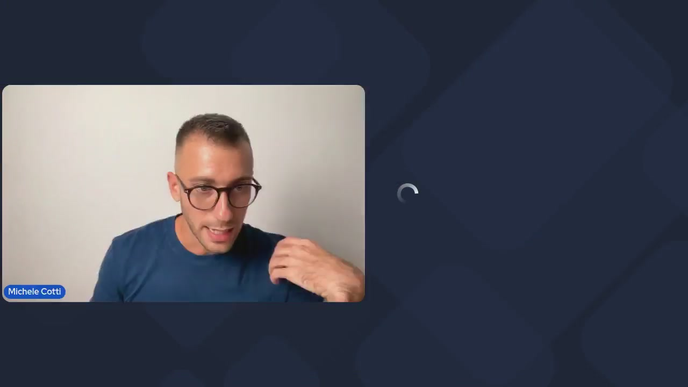
questa è un po' la parte visuale, ok? Qui vedete come c'è la mia azienda che è connessa a vari reparti. Quindi reparto marketing, reparto amministrazione, vendita e clienti. E poi c'è all'interno tutte quelle che sono le connessioni. Quindi se ti faccio vedere guarda cosa c'è dentro. Qua di base vive tutta la conoscenza della mia azienda, ok? Sono tutti i file, documenti, clienti e aziende, progetti, conoscenza, produzione, lo vedete qua sotto, ok? Tutti che sono connessi tra di loro, ok? Quindi io posso chiedere una cosa e lui mi ritorna indietro. Ora torniamo all'azienda e questi sono i vari reparti. All'interno di questa dashboard chiaramente è collegato a tutto quello che è il mio brain. Poi questa, ragazzi, è la parte visuale. Il succo è quello che ci sta dietro, ok? Il succo è quello che ci sta dietro. Poi io ho i vari reparti. Quindi ho la parte dei reparti,
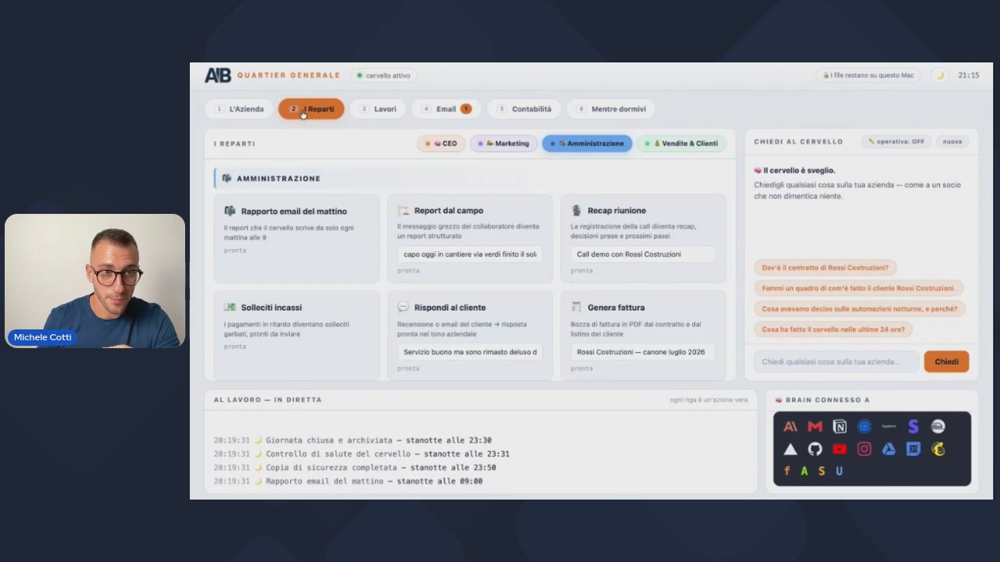
OCR: "E amminisTRAZIONE tl cervelio è sveglio fi Rapporto email del mattino Report dal campo È Recapriunione € Solleciti incassi Rispondi al cliente Gonera fattura
Ad esempio per l'amministrazione c'è il report del mattino, c'è la parte di solleciti incassi, c'è il genere a fattura, il genere a contratto. Io clicco e partono i lavori. La parte di marketing, cioè quello che io vado mi genera delle ads, ok? Il sistema delle copertine, le copertine di video che io faccio su YouTube. Se le facessi dovrei pagare a qualcuno e spenderci tanti soldi, oppure spenderci tempo. Io qua metto il nome del mio video e mi genera le copertine. Oppure i caruselli che vedete su Instagram. La parte di amministrazione, ok? La parte di venite cliente, la parte di preventivi, il quadro di un cliente, la riattivazione di clienti dormienti. Tutte cose che sono collegate al mio brain. E poi io vedo anche tutti i lavori che i miei agenti fanno. Quindi di base, adesso poi non ve li faccio partire, ve li tengo per domani sera, voglio solo darvi una panoramica generale, ok? Qui io vedo i miei vari, come dire, i miei vari agenti che lavorano, quello che ha fatto il preventivo, posso riaprirlo, posso farglielo rifare e quant'altro. E poi in parte io posso sempre parlare con il mio cervello, con il mio brain. Ha accesso a tutto
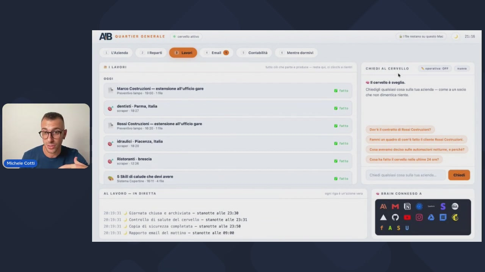
OCR: Michele Cotti Marco Costruzioni — estensione all'ufficio gare dentisti Parma, italia Rossi Costruzioni — estensione all'ufficio gare Idraulici - Piacenza, I Ristoranti. brescia 5 Skil i calude che devi avere - tcervello è sveglio
quello che è la mia knowledge base, la conoscenza della mia azienda, i miei clienti, i documenti, le procedure, il team e quant'altro. E qua sotto, se vedete, è connesso a praticamente tutto. È connesso a Gmail, a Notion, a Calendly, a Tileform, a Stripe. Potete connesserci le macchine, potete connesserci quello che volete, ok? Di base ci si può connettere qualsiasi cosa, e questo è il bello, ok? Poi ho la parte di email. Io so che tanti di voi dicono, eh ma l'email è la cosa da gestire. Io qui ho tutte le mie email per come mi arrivano. Adesso c'ho una attaccata, una chiaramente per farlo vedere in live, altrimenti c'ho attaccata sei caselle email diverse che mi arrivano, posso generare la bozza, qua posso chiedere a chi devo rispondere. Lui prende, si guarda le mie email che è arrivata nella giornata, si guarda se quel cliente gli avevo fatto un preventivo e quant'altro, se devo fare un follow up, e mi genera le bozze. Le bozze vanno di qua e io poi le posso inviare o eliminare. Poi c'è tutta la parte di
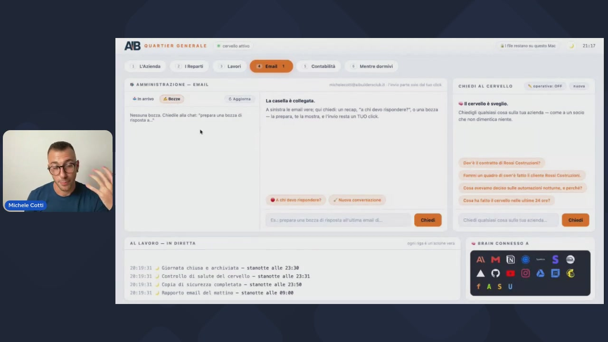
OCR: La casella è collegata. tl cervello è sveglio
contabilità, ok? C'è tutta la parte di contabilità che è attaccata ai gestionali, c'è tutta la parte del mentre dormivi, quindi cose che succedono quando io non sono lì. Quindi il report di tutte le email lo fa di notte ma arriva poi la mattina e poi io lo vedo subito. Si fa una copia del brain, controlla tutta la mia conoscenza che sia ben integrata, che ci siano le connessioni corrette, oppure fa praticamente ogni notte, rilegge tutte le conversazioni che io faccio con il mio compagny brain, i lavori, le email della settimana e la mattina porta quello che ho capito. Quindi mi dà dei suggerimenti, magari i preventivi escono in giornata ma il follow up parte in media dopo sei giorni, un promemoria automatico al terzo giorno chiuderebbe prima, eccetera eccetera eccetera. Questo è il quadro generale, poi questa è la parte visuale, come vi ripeto, e si adatterà poi a quello
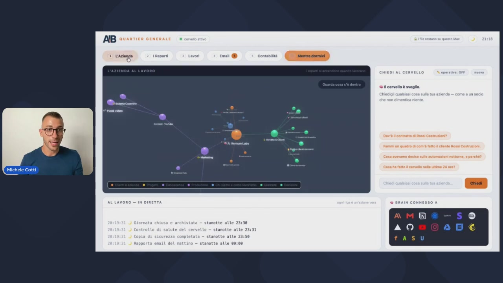
che sarà la vostra azienda. Perché? Perché voi potete avere reparti diversi, potete avere cose diverse. L'importante è che sappiate che si adatta bene ad un'azienda, ci si può collegare gli strumenti, possono entrarci i collaboratori e poi questa è la parte visuale, ma poi nel concreto è quello che ci sta dietro, ok? È quello che ci sta dietro che conta. Perché? Perché si vedono spesso in giro dashboard anche su Instagram gente, eh, batti le mani e parli con Jarvis. Sì, però se poi gli chiedi che meteo c'è nella tua città, capiamoci che non serve a niente, ok? Capiamoci che non serve a niente. Questo è un anteprima di quello che domani andiamo a vedere cosa ci sta dietro,
perché la dashboard è bella, vi farò vedere poi domani dei lavori che partono in autonomia e che mi fa dei lavori, effettivamente. Si prende il lavoro al posto mio, ok? Ma quella è la parte grafica, ok? È la parte comunicativa. Tutto quello che ci sta dietro è la parte importante e domani sera andiamo a vederlo, ok? Domani sera capiamo effettivamente, strato per strato, come si va a fare, costruire. Io adesso, innanzitutto, vi è piaciuta l'anteprima di questo Brain? Ovvio, come ripeto, vi ho dato un anteprima, domani ve lo faccio vedere lavorare. Appriamo due secondi la chat, così bevo e vi ricondivido un attimo, così vi do anche le varie cose della serata. Allora, perfetto, ditemi un attimo. Moltissimo, top, molto, molto, molto, wow, bene, bene, bene, bene,
OCR: Michele Cotti RE
ok? È una figata, eh ragazzi? C'è quella roba che poi davvero vi delega di quel lavoro. Lo fa vedere o spiega cosa fare. Su che motore AI gira? Questo dipende da te, ok? Tipo il mio gira su Globe? Dipende da te. Il bello di questo, ragazzi, è che il motore lo cambiate quando esce il modello nuovo, si mette quello, ok? Non voglio spoilerarvi troppo perché poi lo vedremo tutto domani sera, perché è bello, mi piace, ok? Mi piace, mi piace, mi piace. Domani però andiamo sul concreto, son d'accordo, son d'accordo, assolutamente. Ora, torniamo sul palco, richiudiamo la chat e si parte, ok? Torniamo un attimo alla nostra presentazione. Quindi,
questo, signori, è il cervello di cui vi ho parlato praticamente per un'oretta, ok? Meno di un'ora, una quarantina di minuti. Stasera vi ho fatto vedere che esiste davvero, mi conosce. Domani sera facciamo il passo dopo, quindi lo vedete davvero lavorare come vi ho appena anticipato. Non solo rispondere, ma eseguire un lavoro vero, dall'inizio alla fine davanti a voi, ok? E soprattutto vi faccio vedere come si costruisce, così capite come averne uno anche voi all'interno della vostra azienda. Senza scrivere una riga di codice, ve lo garantisco, ok? Come ripeto, non si scrive una riga di codice, lo scrive AI per noi. Bene, siamo praticamente arrivati alla fine della prima sera e, come promesso, non ve ne andate a mani vuote, ok? Punto numero uno, il workbook della biagnosi. Lì dentro ci sono tutte le domande giuste per fotografare la vostra situazione attuale, perché si parte da quello, ok? Per arrivare a quello che vi ho fatto vedere bisogna partire da lì. Compilatelo con calma, stanotte o domani, quando la diretta è finita e nessuno vi può distrarre, ok? Perché quello che scrivete lì
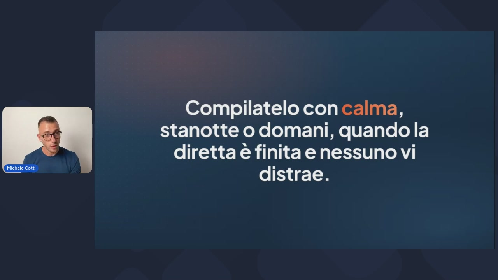
OCR: Compilatelo con calma, stanotte o domani, quando la diretta è finita e nessuno vi distrae.
dentro, il vostro collo di bottiglia, l'analisi che andrete a fare è il punto esatto dal cui partiremo per costruire il vostro cervello, ok? Ma il regalo vero di stasera è un'altra cosa, è uno strumento, ok? E ve lo do adesso. Si chiama l'impronta. Fa esattamente quello di cui vi ho parlato stasera. Prende l'intelligenza artificiale, che oggi per voi è il genio senza memoria, e le dà il primo pezzo di memoria, il primo pezzo del vostro cervello. Come funziona? Poi, nel documento che vi diamo, c'è dentro comunque le istruzioni. Lo aprite dentro una chat di Cloud, o se lo caricate come skill o usate il prompt, e lei comincia a farvi delle domande sulla vostra azienda. Chi siete? Cosa vendete? Chi sono i vostri clienti? Come parlate? Come lavorate? Voi rispondete come se stesse spiegando l'azienda a un collaboratore nuovo il primo giorno e qui vi do un consiglio. Se ancora non l'avete scaricato, so che magari tanti di voi guardano i video di YouTube e magari già ce l'hanno, se non l'avete scaricato ci sono dei dettatori vocali. Io ad
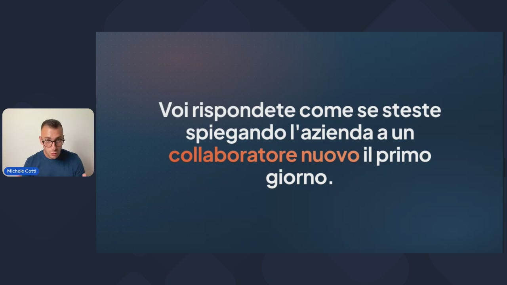
OCR: Voi rispondete come se steste spiegando l'azienda a un collaboratore nuovo il primo giorno.
esempio uso WhisperFlow, non mi pagano, non fa niente. Magari se lo utilizzate, quando spiegate alla vostra azienda è più comodo, perché invece che perdere tre ore a digitare, tenete un pulsantino, si parla, ok? E detti tutto a lei. Io, da quando ho iniziato ad usarlo, ho risparmiato un po' di tempo. Quindi rispondete all'interno come se state spiegando l'azienda ad un collaboratore nuovo il primo giorno e mentre voi rispondete, lei scrive. Alla fine vi ritrovate in mano cinque file già pronti. Chi siete? Cosa vendete? I vostri clienti? Il vostro tono? E come lavorate? I primi cinque mattoni del vostro cervello, scritti, vostri, ok? Da stasera lei smette di essere il genio senza memoria di cui vi parlavo. Comincia a sapere chi siete e comincia a scrivere come voi, ok? Ora ve lo manderà il vostro tutor su WhatsApp, ma ovviamente solo perché è arrivato fino a qui, fino alla fine. Quindi bravi, ok? Perché le cose che contano le diamo a chi c'è, come vi ho detto.
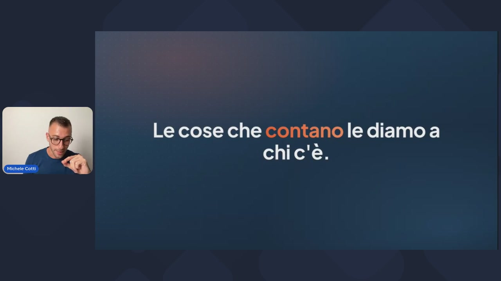
OCR: Le cose che contano le diamo a chic'è.
E questo è solo il primo pezzo, ok? È solo il primo pezzo. Domani vi faccio vedere cosa, come tutti gli altri si mettono insieme, strato dopo strato. Ma questo stanotte potete già cominciare ad utilizzarlo. Inoltre, domani facciamo il vero salto. Vi faccio vedere i sei strati con cui si costruisce il company brain, uno per uno, nell'ordine giusto, come vi ho già detto. E soprattutto lo vedete lavorare da lì. Oggi vi ho fatto vedere una panoramica, ok? Domani lo vedete eseguire un lavoro vero, mentre voi guardate, ok? E però fatemi una promessa, non mancate, ok? Arrivate con la vostra diagnosi compilata, perché domani non si parte da zero, si parte da lì, dal vostro collo di bottiglie. Quindi davvero compilate quel benedetto workshop, prendetevi quei 15, 20, mezz'ora di tempo che vi serve, ma compilatelo, ok? Ci vediamo domani sera alle ore 8 e 30. Adesso qui in chat, qui in chat, invieremo il link per il workbook e il link per la skill. Io vi invito comunque a salvarli, dato che siete qua in live, ok? Li invierà Gaia.
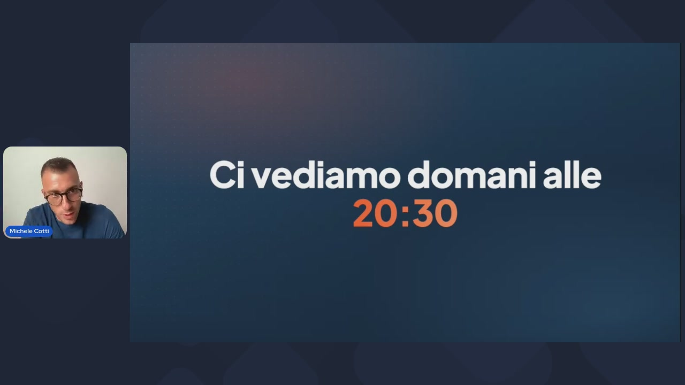
OCR: \ Ci vediamo domani alle 20:30
Salvateli, ok? Li sta inviando Gaia, vedete? Se ancora non avete il numero, vi ha già inviato i numeri e in più ci sono il workbook e la skill dell'impronta, ok? Salvateveli, ok? Salvateveli, ragazzi. Workbook, compilatelo, anche perché domani, ok? Domani vedo di... Vediamo un attimo chi l'ha compilato e chi non l'ha compilato, ok? Chiederò il mio company brain e chi di voi l'ha compilato e non l'ha compilato e vedremo effettivamente. Dato che è collegato a tutto, ok? È collegato a tutti gli strumenti, domani chiederemo direttamente al brain chi l'ha compilato o no. E vi consiglio di farlo, ok? Vi consiglio di farlo. Perché? Perché è da lì che parte tutto, ok? È da lì che parte tutto. E poi avete la skill che vi ho dato dell'impronta. La potete usare come skill oppure come prompt. Quando siete nelle AI, state lì, parlate, parlate, come vi ripeto, se utilizzate Wistair Flow o quello che volete, un dettatore vocale, ok? Vi va
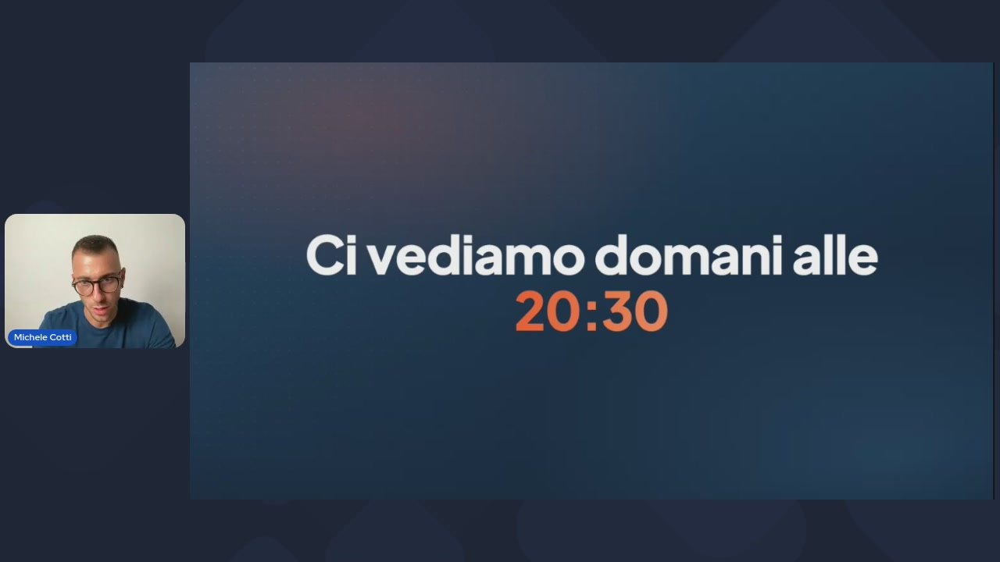
OCR: ì Ci vediamo domani alle ; 20:30
a produrre cinque documenti che poi potranno essere la base di quello che è il vostro company brain, ok? Bene, intanto io vi dico, vi è piaciuta sta prima serata? Datemi un check qua in chat. Non è neanche durata tantissimo, vi abbiamo fatto anche più che veloci. Bene, bene, bene. Spero che la demo vi sia piaciuta. Come ripeto, raga, compilate, ok? Compilate. Il messaggio è questo, ok? È questo qui. Io adesso lo tolgo da qua che disturba un pochettino la vista, ma lo trovate qua in parte nella parte di chat, ok? Sta inviando Gaia. Vedete, Gaia di AI Builders Club, ok? Sono quei due lì. Link workbook, link notion, che c'è dentro tutto, ok? Adesso si è frizzato tutto nella chat. Ottimo, ottimo. Tutto ok. Sì, bellissima. Sì, sintetico. Ottimo. Bene, bene, mi fa piacere. Grazie, ragazzi. Grazie mille per i feedback. Ottimo, ottimo, ottimo, ottimo. Sono contento di servirvi. Anche perché, raga, bisogna arrivare al dunque, ok? Stasera vi ho fatto una
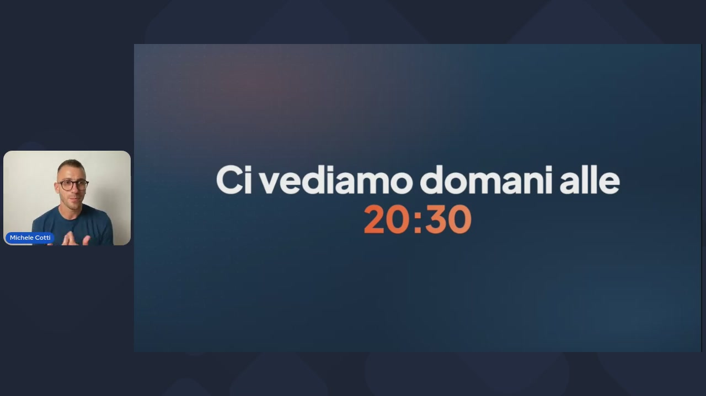
OCR: o Ci vediamo domani alle d 20:30
bella panoramica, vi ho anche fatto vedere chi sono, ve l'ho fatto vedere. Domani entriamo vero nel completo. Quindi domani sera esserci, ok? Domani sera esserci, ok? Sono bello carico, non vedevo l'ora di questo bel workshop. Siamo davvero in, siamo stati tanti per tutta la serata. Se uno più ne indica cosa suggerisci di fare, fatela doppia. Vai tranquillo. Molto interessante. Poi la terza cosa, sistema setup precedentemente. Ma guarda, ti dico dipende che setup avevi prima, ok? Molto probabilmente sì, dipende che setup. Perché è quello, no? Quando prima qualcuno mi diceva, ma se parto da zero si può? Sì, raga, si può e tante volte è meglio, perché? Perché in giro si vede gente che vi fa costruire robe che non servono a un cazzo, passatemi il termine, e poi vi ritrovate lì con tanta roba che alla fine non serve a nulla, ok? E spesso partire da zero è meglio che di base aver già costruito tante cose che poi non vanno
OCR: Ci vediamo domani alle e 20:30
bene. Poi spesso si può switchare, ok? Però davvero anche perché in giro c'è gente che mi lanta costruzioni di qua e di là e non fa l'imprenditore magari neanche da un anno, ok? Ragazzini che si mettono online perché sono gli AI, voi. No ragazzi, io quello che vi porto, ve lo porto perché faccio impresa da un po', tanti di voi probabilmente faranno numeri molto più grandi di me, ok? Non sono qui per questo. Ma l'AI l'ho usato da davvero tanto tempo, l'ho integrato nelle aziende. E quello che porto, e lo vedete anche su YouTube, comunque quello che porto, lo porto perché è creato un qualcosa di concreto, che sia utile ad un'azienda, utile alle persone, ok? I dati, lo vedrai domani sera, rimarranno sempre sul tuo computer, ok? Ovviamente ci gireranno i modelli AI, però i dati li trarai sul computer, se vuoi. Alessandro, ok. Guarda, ti dico, domani vediamo un attimo, ok? Domani guardiamo un attimo, effettivamente ciò che hai in testa sarà in linea con quello che andremo a vedere. Comunque domani. Allora, puoi permettere la copia? La pagina Notion? Guardiamo, sennò in realtà ti
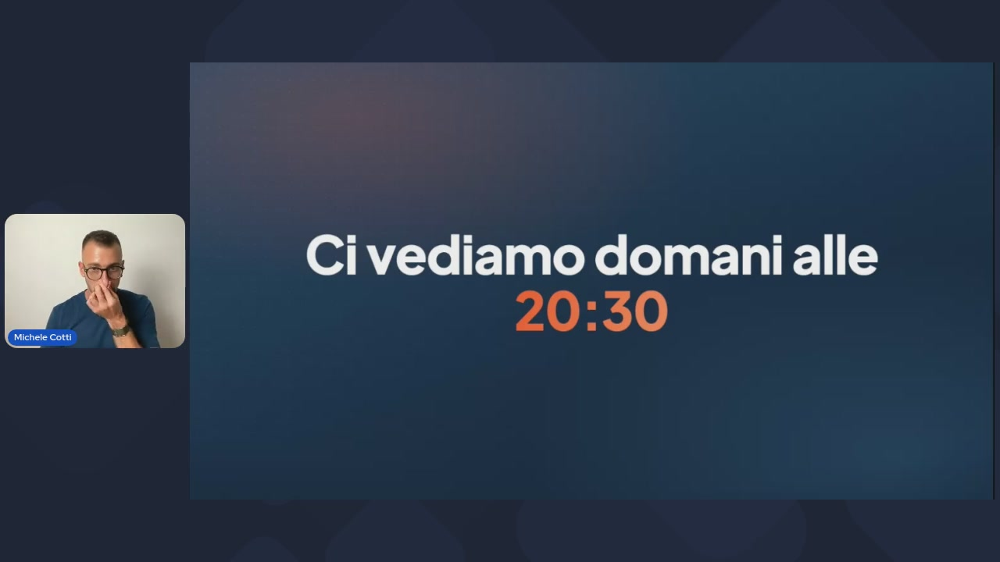
OCR: È Ci vediamo domani alle L 20:30
prendi, o ti fai un copy and call e te la metti tu dall'altra parte, ok? Commanda, commanda, fai copia di tutto e via. Ottimo, dai, dai, dai. Io, ragazzi, direi che ci siamo, ok? Gaia, come ripeto, vi sta andando il link, salvatevelo. Io vi consiglio di salvarlo da qua, ok? Anche perché siete comunque in tanti, magari i tutor ci tengono un attimo a contattarvi tutti, ok? Quindi di conseguenza io vi consiglio di prendere direttamente il link da qua, da Gaia, che ve li sta inviando. Poi, nel caso, comunque ve li girerà anche il tutor, ok? Ve li girerà comunque anche il tutor e, raga, sono contento che siete stati belli numerosi. Mi raccomando, domani sera, sempre 20 e 30 in punto, si riparte, ok? Entriamo davvero nel vivo, ok? Entriamo davvero nel vivo. Io vi mando un grande abbraccio, ok? Vi mando un grande
OCR: 3 Ci vediamo domani alle 4 20:30
abbraccio e ci vediamo domani sera, ok? Un abbraccio. Ciao, ragazzi! Sottotitoli e revisione a cura di QTSS Sottotitoli e revisione a cura di QTSS
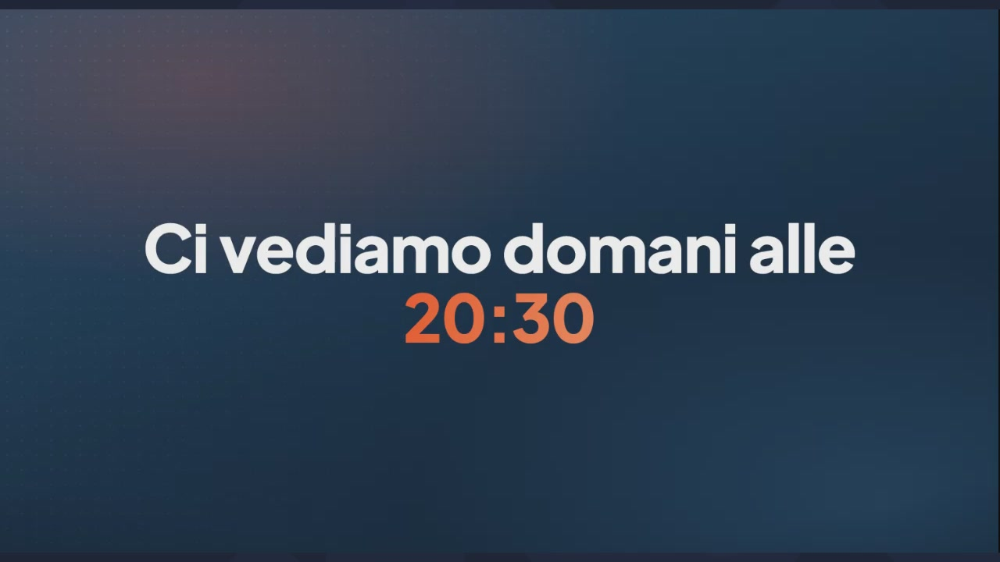
OCR: Ci vediamo domani alle 20:30
Sottotitoli e revisione a cura di QTSS Sottotitoli e revisione a cura di QTSS